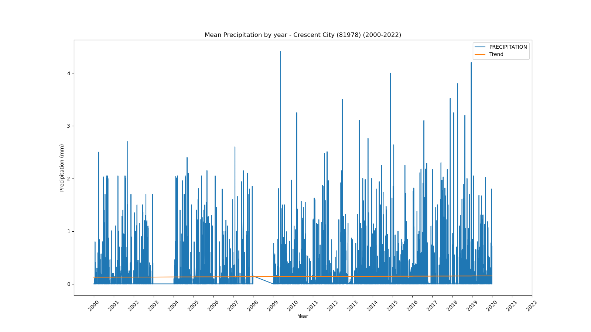
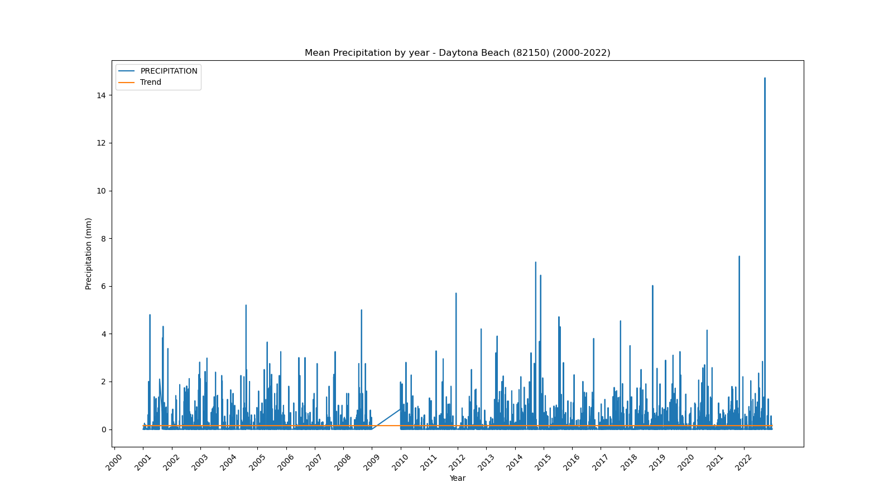
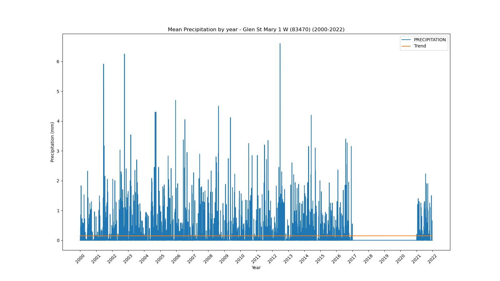
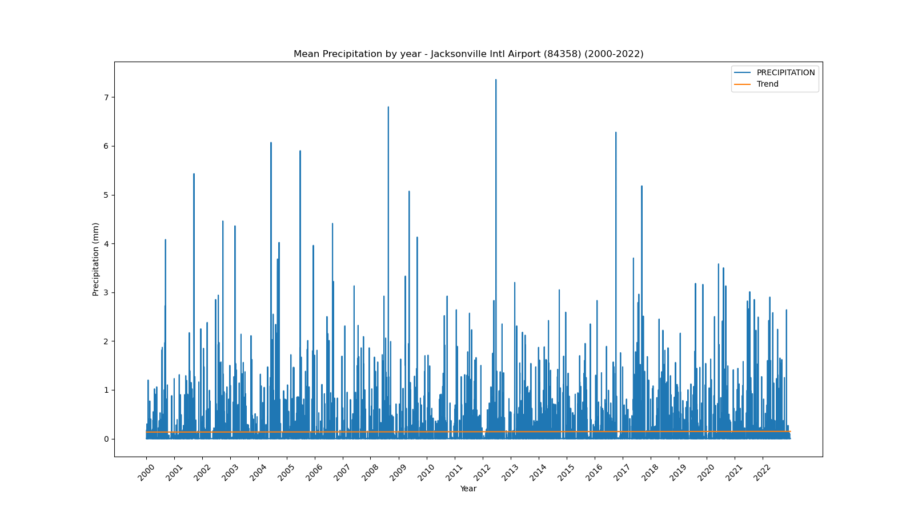
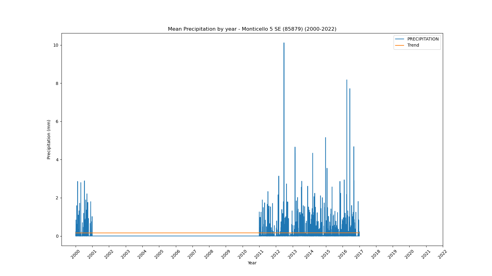
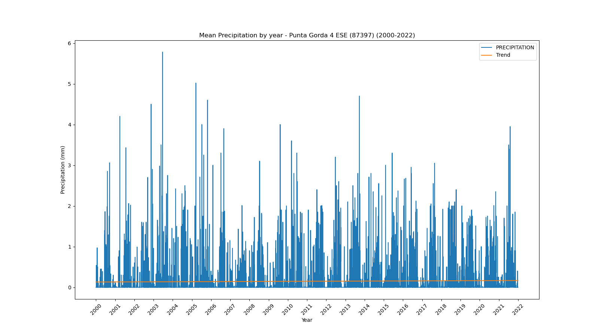

<!DOCTYPE html>
<html>
<head>
    
    <meta http-equiv="content-type" content="text/html; charset=UTF-8" />
    
        <script>
            L_NO_TOUCH = false;
            L_DISABLE_3D = false;
        </script>
    
    <style>html, body {width: 100%;height: 100%;margin: 0;padding: 0;}</style>
    <style>#map {position:absolute;top:0;bottom:0;right:0;left:0;}</style>
    <script src="https://cdn.jsdelivr.net/npm/leaflet@1.9.3/dist/leaflet.js"></script>
    <script src="https://code.jquery.com/jquery-1.12.4.min.js"></script>
    <script src="https://cdn.jsdelivr.net/npm/bootstrap@5.2.2/dist/js/bootstrap.bundle.min.js"></script>
    <script src="https://cdnjs.cloudflare.com/ajax/libs/Leaflet.awesome-markers/2.0.2/leaflet.awesome-markers.js"></script>
    <link rel="stylesheet" href="https://cdn.jsdelivr.net/npm/leaflet@1.9.3/dist/leaflet.css"/>
    <link rel="stylesheet" href="https://cdn.jsdelivr.net/npm/bootstrap@5.2.2/dist/css/bootstrap.min.css"/>
    <link rel="stylesheet" href="https://netdna.bootstrapcdn.com/bootstrap/3.0.0/css/bootstrap.min.css"/>
    <link rel="stylesheet" href="https://cdn.jsdelivr.net/npm/@fortawesome/fontawesome-free@6.2.0/css/all.min.css"/>
    <link rel="stylesheet" href="https://cdnjs.cloudflare.com/ajax/libs/Leaflet.awesome-markers/2.0.2/leaflet.awesome-markers.css"/>
    <link rel="stylesheet" href="https://cdn.jsdelivr.net/gh/python-visualization/folium/folium/templates/leaflet.awesome.rotate.min.css"/>
    
            <meta name="viewport" content="width=device-width,
                initial-scale=1.0, maximum-scale=1.0, user-scalable=no" />
            <style>
                #map_261324b8315ab3c2200bf17166703213 {
                    position: relative;
                    width: 100.0%;
                    height: 100.0%;
                    left: 0.0%;
                    top: 0.0%;
                }
                .leaflet-container { font-size: 1rem; }
            </style>
        
</head>
<body>
    
    
            <div class="folium-map" id="map_261324b8315ab3c2200bf17166703213" ></div>
        
</body>
<script>
    
    
            var map_261324b8315ab3c2200bf17166703213 = L.map(
                "map_261324b8315ab3c2200bf17166703213",
                {
                    center: [28.0, -82.5],
                    crs: L.CRS.EPSG3857,
                    zoom: 7,
                    zoomControl: false,
                    preferCanvas: false,
                }
            );

            

        
    
            var tile_layer_2e6d0255a7d7d4d6b26038e1df64a1ba = L.tileLayer(
                "https://cartodb-basemaps-{s}.global.ssl.fastly.net/dark_all/{z}/{x}/{y}.png",
                {"attribution": "\u0026copy; \u003ca target=\"_blank\" href=\"http://www.openstreetmap.org/copyright\"\u003eOpenStreetMap\u003c/a\u003e contributors \u0026copy; \u003ca target=\"_blank\" href=\"http://cartodb.com/attributions\"\u003eCartoDB\u003c/a\u003e, CartoDB \u003ca target=\"_blank\" href =\"http://cartodb.com/attributions\"\u003eattributions\u003c/a\u003e", "detectRetina": false, "maxNativeZoom": 18, "maxZoom": 18, "minZoom": 7, "noWrap": false, "opacity": 1, "subdomains": "abc", "tms": false}
            ).addTo(map_261324b8315ab3c2200bf17166703213);
        
    
            var marker_453219129720f3a268ea8795f9953369 = L.marker(
                [29.72, -85.03],
                {}
            ).addTo(map_261324b8315ab3c2200bf17166703213);
        
    
            var icon_cd6cf760de60eb485e068dea448d6f1e = L.AwesomeMarkers.icon(
                {"extraClasses": "fa-rotate-0", "icon": "info-sign", "iconColor": "white", "markerColor": "lightgreen", "prefix": "glyphicon"}
            );
            marker_453219129720f3a268ea8795f9953369.setIcon(icon_cd6cf760de60eb485e068dea448d6f1e);
        
    
        var popup_8b2133be66f2885c66e0b64ea282f340 = L.popup({"maxWidth": 1000, "minWidth": 500});

        
            
                var html_20d0705dbff7542f22439b59fc1706f0 = $(`<div id="html_20d0705dbff7542f22439b59fc1706f0" style="width: 100.0%; height: 100.0%;"><b>Apalachicola Airport (80211)</b><br>lat: 29.72, lon: -85.03<br><a href='../../static/img/plots/timeseries/precip_daily/80211_2000-2022.png' target='_BLANK'></a></div>`)[0];
                popup_8b2133be66f2885c66e0b64ea282f340.setContent(html_20d0705dbff7542f22439b59fc1706f0);
            
        

        marker_453219129720f3a268ea8795f9953369.bindPopup(popup_8b2133be66f2885c66e0b64ea282f340)
        ;

        
    
    
            var marker_3cd41e6b45b87cad7b37f074f1562b28 = L.marker(
                [27.22, -81.86],
                {}
            ).addTo(map_261324b8315ab3c2200bf17166703213);
        
    
            var icon_051e1135fe37b510d91b0e787d8b347a = L.AwesomeMarkers.icon(
                {"extraClasses": "fa-rotate-0", "icon": "info-sign", "iconColor": "white", "markerColor": "lightgreen", "prefix": "glyphicon"}
            );
            marker_3cd41e6b45b87cad7b37f074f1562b28.setIcon(icon_051e1135fe37b510d91b0e787d8b347a);
        
    
        var popup_ef1f4c37519a82dc5d145c46defc944e = L.popup({"maxWidth": 1000, "minWidth": 500});

        
            
                var html_0786f80cadc37f54c35ead6482d277f1 = $(`<div id="html_0786f80cadc37f54c35ead6482d277f1" style="width: 100.0%; height: 100.0%;"><b>Arcadia (80228)</b><br>lat: 27.22, lon: -81.86<br><a href='../../static/img/plots/timeseries/precip_daily/80228_2000-2022.png' target='_BLANK'></a></div>`)[0];
                popup_ef1f4c37519a82dc5d145c46defc944e.setContent(html_0786f80cadc37f54c35ead6482d277f1);
            
        

        marker_3cd41e6b45b87cad7b37f074f1562b28.bindPopup(popup_ef1f4c37519a82dc5d145c46defc944e)
        ;

        
    
    
            var marker_6982a15b555b4d7ecfcc83f249d078fb = L.marker(
                [27.18, -81.35],
                {}
            ).addTo(map_261324b8315ab3c2200bf17166703213);
        
    
            var icon_618f15f756f294c7e6e91689a39d939b = L.AwesomeMarkers.icon(
                {"extraClasses": "fa-rotate-0", "icon": "info-sign", "iconColor": "white", "markerColor": "lightgreen", "prefix": "glyphicon"}
            );
            marker_6982a15b555b4d7ecfcc83f249d078fb.setIcon(icon_618f15f756f294c7e6e91689a39d939b);
        
    
        var popup_2da5ba91efc8b75fd8bd92f74388535b = L.popup({"maxWidth": 1000, "minWidth": 500});

        
            
                var html_10514cdf5e61e4b0aafebe0c258b4a57 = $(`<div id="html_10514cdf5e61e4b0aafebe0c258b4a57" style="width: 100.0%; height: 100.0%;"><b>Archbold Bio Station (80236)</b><br>lat: 27.18, lon: -81.35<br><a href='../../static/img/plots/timeseries/precip_daily/80236_2000-2022.png' target='_BLANK'></a></div>`)[0];
                popup_2da5ba91efc8b75fd8bd92f74388535b.setContent(html_10514cdf5e61e4b0aafebe0c258b4a57);
            
        

        marker_6982a15b555b4d7ecfcc83f249d078fb.bindPopup(popup_2da5ba91efc8b75fd8bd92f74388535b)
        ;

        
    
    
            var marker_2f03da7c06578d045bd93a242a74557b = L.marker(
                [27.59, -81.53],
                {}
            ).addTo(map_261324b8315ab3c2200bf17166703213);
        
    
            var icon_9ad54241495fb19fdd14285207d044aa = L.AwesomeMarkers.icon(
                {"extraClasses": "fa-rotate-0", "icon": "info-sign", "iconColor": "white", "markerColor": "lightgreen", "prefix": "glyphicon"}
            );
            marker_2f03da7c06578d045bd93a242a74557b.setIcon(icon_9ad54241495fb19fdd14285207d044aa);
        
    
        var popup_c714d47f001b96234dbf7d0ec87fd34e = L.popup({"maxWidth": 1000, "minWidth": 500});

        
            
                var html_ed367efb6e66c965a4790cd0cb63826f = $(`<div id="html_ed367efb6e66c965a4790cd0cb63826f" style="width: 100.0%; height: 100.0%;"><b>Avon Park 2 W (80369)</b><br>lat: 27.59, lon: -81.53<br><a href='../../static/img/plots/timeseries/precip_daily/80369_2000-2022.png' target='_BLANK'></a></div>`)[0];
                popup_c714d47f001b96234dbf7d0ec87fd34e.setContent(html_ed367efb6e66c965a4790cd0cb63826f);
            
        

        marker_2f03da7c06578d045bd93a242a74557b.bindPopup(popup_c714d47f001b96234dbf7d0ec87fd34e)
        ;

        
    
    
            var marker_ee8f0f14fb1214e47fa396a4a11549fd = L.marker(
                [27.95, -81.79],
                {}
            ).addTo(map_261324b8315ab3c2200bf17166703213);
        
    
            var icon_d42e3578dd0831c1c4966e3654bb79c6 = L.AwesomeMarkers.icon(
                {"extraClasses": "fa-rotate-0", "icon": "info-sign", "iconColor": "white", "markerColor": "lightgreen", "prefix": "glyphicon"}
            );
            marker_ee8f0f14fb1214e47fa396a4a11549fd.setIcon(icon_d42e3578dd0831c1c4966e3654bb79c6);
        
    
        var popup_45b152979b71738c1c5cbf7bd5002c76 = L.popup({"maxWidth": 1000, "minWidth": 500});

        
            
                var html_d51e82de8ddf29b057143cdecae84c21 = $(`<div id="html_d51e82de8ddf29b057143cdecae84c21" style="width: 100.0%; height: 100.0%;"><b>Bartow (80478)</b><br>lat: 27.95, lon: -81.79<br><a href='../../static/img/plots/timeseries/precip_daily/80478_2000-2022.png' target='_BLANK'></a></div>`)[0];
                popup_45b152979b71738c1c5cbf7bd5002c76.setContent(html_d51e82de8ddf29b057143cdecae84c21);
            
        

        marker_ee8f0f14fb1214e47fa396a4a11549fd.bindPopup(popup_45b152979b71738c1c5cbf7bd5002c76)
        ;

        
    
    
            var marker_5068f7aabb0a0feed471cceffe5a8a10 = L.marker(
                [26.7, -80.66],
                {}
            ).addTo(map_261324b8315ab3c2200bf17166703213);
        
    
            var icon_9851976e13d7e339cb024d39520a4927 = L.AwesomeMarkers.icon(
                {"extraClasses": "fa-rotate-0", "icon": "info-sign", "iconColor": "white", "markerColor": "lightgreen", "prefix": "glyphicon"}
            );
            marker_5068f7aabb0a0feed471cceffe5a8a10.setIcon(icon_9851976e13d7e339cb024d39520a4927);
        
    
        var popup_d826e76491b74dfe1b78e1e3eacdd1c5 = L.popup({"maxWidth": 1000, "minWidth": 500});

        
            
                var html_436b751fdb2a75d5b81c70006e561025 = $(`<div id="html_436b751fdb2a75d5b81c70006e561025" style="width: 100.0%; height: 100.0%;"><b>Belle Glade Airport (80611)</b><br>lat: 26.7, lon: -80.66<br><a href='../../static/img/plots/timeseries/precip_daily/80611_2000-2022.png' target='_BLANK'></a></div>`)[0];
                popup_d826e76491b74dfe1b78e1e3eacdd1c5.setContent(html_436b751fdb2a75d5b81c70006e561025);
            
        

        marker_5068f7aabb0a0feed471cceffe5a8a10.bindPopup(popup_d826e76491b74dfe1b78e1e3eacdd1c5)
        ;

        
    
    
            var marker_0c8a82d8178414065884fa30b5c9ff7b = L.marker(
                [27.5, -82.57],
                {}
            ).addTo(map_261324b8315ab3c2200bf17166703213);
        
    
            var icon_2fb7c630c87a0e6c95bb7c5eb9d4ee2d = L.AwesomeMarkers.icon(
                {"extraClasses": "fa-rotate-0", "icon": "info-sign", "iconColor": "white", "markerColor": "lightgreen", "prefix": "glyphicon"}
            );
            marker_0c8a82d8178414065884fa30b5c9ff7b.setIcon(icon_2fb7c630c87a0e6c95bb7c5eb9d4ee2d);
        
    
        var popup_5741f227c9958c881d93abdf60134441 = L.popup({"maxWidth": 1000, "minWidth": 500});

        
            
                var html_aed55db7bbc92d7238523bb5ea113ba9 = $(`<div id="html_aed55db7bbc92d7238523bb5ea113ba9" style="width: 100.0%; height: 100.0%;"><b>Bradenton 5 ESE (80945)</b><br>lat: 27.5, lon: -82.57<br><a href='../../static/img/plots/timeseries/precip_daily/80945_2000-2022.png' target='_BLANK'></a></div>`)[0];
                popup_5741f227c9958c881d93abdf60134441.setContent(html_aed55db7bbc92d7238523bb5ea113ba9);
            
        

        marker_0c8a82d8178414065884fa30b5c9ff7b.bindPopup(popup_5741f227c9958c881d93abdf60134441)
        ;

        
    
    
            var marker_502008156cac36dc2c199ebdab0aea28 = L.marker(
                [28.62, -82.37],
                {}
            ).addTo(map_261324b8315ab3c2200bf17166703213);
        
    
            var icon_038ba21e5369a20135527fd29faeee84 = L.AwesomeMarkers.icon(
                {"extraClasses": "fa-rotate-0", "icon": "info-sign", "iconColor": "white", "markerColor": "orange", "prefix": "glyphicon"}
            );
            marker_502008156cac36dc2c199ebdab0aea28.setIcon(icon_038ba21e5369a20135527fd29faeee84);
        
    
        var popup_3b1d33885ce196caa2cfe30b9c29948d = L.popup({"maxWidth": 1000, "minWidth": 500});

        
            
                var html_342a081a3e10433c277428602e46b0c3 = $(`<div id="html_342a081a3e10433c277428602e46b0c3" style="width: 100.0%; height: 100.0%;"><b>Chinsegut Hill (81046)</b><br>lat: 28.62, lon: -82.37<br><a href='../../static/img/plots/timeseries/precip_daily/81046_2000-2022.png' target='_BLANK'></a></div>`)[0];
                popup_3b1d33885ce196caa2cfe30b9c29948d.setContent(html_342a081a3e10433c277428602e46b0c3);
            
        

        marker_502008156cac36dc2c199ebdab0aea28.bindPopup(popup_3b1d33885ce196caa2cfe30b9c29948d)
        ;

        
    
    
            var marker_978930e180c4b51ab16fc429b01af86e = L.marker(
                [28.66, -82.11],
                {}
            ).addTo(map_261324b8315ab3c2200bf17166703213);
        
    
            var icon_41d17164c1d1d1f1a4196450becd012b = L.AwesomeMarkers.icon(
                {"extraClasses": "fa-rotate-0", "icon": "info-sign", "iconColor": "white", "markerColor": "orange", "prefix": "glyphicon"}
            );
            marker_978930e180c4b51ab16fc429b01af86e.setIcon(icon_41d17164c1d1d1f1a4196450becd012b);
        
    
        var popup_e713b5ac9e8a9720e9db1e1fe853643c = L.popup({"maxWidth": 1000, "minWidth": 500});

        
            
                var html_a1c884b8886392b195cd1b2e054efb45 = $(`<div id="html_a1c884b8886392b195cd1b2e054efb45" style="width: 100.0%; height: 100.0%;"><b>Bushnell 1 E (81163)</b><br>lat: 28.66, lon: -82.11<br><a href='../../static/img/plots/timeseries/precip_daily/81163_2000-2022.png' target='_BLANK'></a></div>`)[0];
                popup_e713b5ac9e8a9720e9db1e1fe853643c.setContent(html_a1c884b8886392b195cd1b2e054efb45);
            
        

        marker_978930e180c4b51ab16fc429b01af86e.bindPopup(popup_e713b5ac9e8a9720e9db1e1fe853643c)
        ;

        
    
    
            var marker_1fb5b11922400715f0e1dcdb691e71b4 = L.marker(
                [26.86, -80.63],
                {}
            ).addTo(map_261324b8315ab3c2200bf17166703213);
        
    
            var icon_94d2a5d5be89e0a437614f25a4dbbf57 = L.AwesomeMarkers.icon(
                {"extraClasses": "fa-rotate-0", "icon": "info-sign", "iconColor": "white", "markerColor": "orange", "prefix": "glyphicon"}
            );
            marker_1fb5b11922400715f0e1dcdb691e71b4.setIcon(icon_94d2a5d5be89e0a437614f25a4dbbf57);
        
    
        var popup_949fc5f37bba73657879bf900ffcac49 = L.popup({"maxWidth": 1000, "minWidth": 500});

        
            
                var html_d9b119315c4cd128979cb7b88bba9f81 = $(`<div id="html_d9b119315c4cd128979cb7b88bba9f81" style="width: 100.0%; height: 100.0%;"><b>Canal Point (81276)</b><br>lat: 26.86, lon: -80.63<br><a href='../../static/img/plots/timeseries/precip_daily/81276_2000-2022.png' target='_BLANK'></a></div>`)[0];
                popup_949fc5f37bba73657879bf900ffcac49.setContent(html_d9b119315c4cd128979cb7b88bba9f81);
            
        

        marker_1fb5b11922400715f0e1dcdb691e71b4.bindPopup(popup_949fc5f37bba73657879bf900ffcac49)
        ;

        
    
    
            var marker_25f8ae3f32f162b4a681165f3160a968 = L.marker(
                [30.78, -85.54],
                {}
            ).addTo(map_261324b8315ab3c2200bf17166703213);
        
    
            var icon_22c02a8994fd890fb7501759efdd7e2c = L.AwesomeMarkers.icon(
                {"extraClasses": "fa-rotate-0", "icon": "info-sign", "iconColor": "white", "markerColor": "lightgreen", "prefix": "glyphicon"}
            );
            marker_25f8ae3f32f162b4a681165f3160a968.setIcon(icon_22c02a8994fd890fb7501759efdd7e2c);
        
    
        var popup_c3332f5fc02480d9cda4c1e91057630a = L.popup({"maxWidth": 1000, "minWidth": 500});

        
            
                var html_2571cfa9f6bcd96a1c59bb98e54aa112 = $(`<div id="html_2571cfa9f6bcd96a1c59bb98e54aa112" style="width: 100.0%; height: 100.0%;"><b>Chipley (81544)</b><br>lat: 30.78, lon: -85.54<br><a href='../../static/img/plots/timeseries/precip_daily/81544_2000-2022.png' target='_BLANK'></a></div>`)[0];
                popup_c3332f5fc02480d9cda4c1e91057630a.setContent(html_2571cfa9f6bcd96a1c59bb98e54aa112);
            
        

        marker_25f8ae3f32f162b4a681165f3160a968.bindPopup(popup_c3332f5fc02480d9cda4c1e91057630a)
        ;

        
    
    
            var marker_a365a72ac1e49eb648eacd5dc4497366 = L.marker(
                [28.56, -81.77],
                {}
            ).addTo(map_261324b8315ab3c2200bf17166703213);
        
    
            var icon_1c85dfeeb6527d3880a5d5c7328c8395 = L.AwesomeMarkers.icon(
                {"extraClasses": "fa-rotate-0", "icon": "info-sign", "iconColor": "white", "markerColor": "orange", "prefix": "glyphicon"}
            );
            marker_a365a72ac1e49eb648eacd5dc4497366.setIcon(icon_1c85dfeeb6527d3880a5d5c7328c8395);
        
    
        var popup_35f7ed35a8721a67ca56aa0c3aa38de5 = L.popup({"maxWidth": 1000, "minWidth": 500});

        
            
                var html_df0c6ea9df7460995005789100153a8b = $(`<div id="html_df0c6ea9df7460995005789100153a8b" style="width: 100.0%; height: 100.0%;"><b>Clermont 9 S (81641)</b><br>lat: 28.56, lon: -81.77<br><a href='../../static/img/plots/timeseries/precip_daily/81641_2000-2022.png' target='_BLANK'></a></div>`)[0];
                popup_35f7ed35a8721a67ca56aa0c3aa38de5.setContent(html_df0c6ea9df7460995005789100153a8b);
            
        

        marker_a365a72ac1e49eb648eacd5dc4497366.bindPopup(popup_35f7ed35a8721a67ca56aa0c3aa38de5)
        ;

        
    
    
            var marker_4b83604096459e0f1bf77f81e68140ea = L.marker(
                [29.43, -81.51],
                {}
            ).addTo(map_261324b8315ab3c2200bf17166703213);
        
    
            var icon_f41df81597bc57b5a00ebf1189ac53c7 = L.AwesomeMarkers.icon(
                {"extraClasses": "fa-rotate-0", "icon": "info-sign", "iconColor": "white", "markerColor": "lightgreen", "prefix": "glyphicon"}
            );
            marker_4b83604096459e0f1bf77f81e68140ea.setIcon(icon_f41df81597bc57b5a00ebf1189ac53c7);
        
    
        var popup_47bd59612e966d3df9bc6c9188a776c9 = L.popup({"maxWidth": 1000, "minWidth": 500});

        
            
                var html_803eeac58ff36235081ecc1abee203c2 = $(`<div id="html_803eeac58ff36235081ecc1abee203c2" style="width: 100.0%; height: 100.0%;"><b>Crescent City (81978)</b><br>lat: 29.43, lon: -81.51<br><a href='../../static/img/plots/timeseries/precip_daily/81978_2000-2022.png' target='_BLANK'></a></div>`)[0];
                popup_47bd59612e966d3df9bc6c9188a776c9.setContent(html_803eeac58ff36235081ecc1abee203c2);
            
        

        marker_4b83604096459e0f1bf77f81e68140ea.bindPopup(popup_47bd59612e966d3df9bc6c9188a776c9)
        ;

        
    
    
            var marker_d17d4f0aea6c94c3d1b6f7d52ddd12a8 = L.marker(
                [30.78, -86.52],
                {}
            ).addTo(map_261324b8315ab3c2200bf17166703213);
        
    
            var icon_3402100a2f5409e90d1b91cea63ae1cb = L.AwesomeMarkers.icon(
                {"extraClasses": "fa-rotate-0", "icon": "info-sign", "iconColor": "white", "markerColor": "lightgreen", "prefix": "glyphicon"}
            );
            marker_d17d4f0aea6c94c3d1b6f7d52ddd12a8.setIcon(icon_3402100a2f5409e90d1b91cea63ae1cb);
        
    
        var popup_fce6795e312ca055bd0c74252cbf0ca7 = L.popup({"maxWidth": 1000, "minWidth": 500});

        
            
                var html_14ab0f82e38cc6652e82f3165d0cafd2 = $(`<div id="html_14ab0f82e38cc6652e82f3165d0cafd2" style="width: 100.0%; height: 100.0%;"><b>Crestview Bob Sikes Airport (81986)</b><br>lat: 30.78, lon: -86.52<br><a href='../../static/img/plots/timeseries/precip_daily/81986_2000-2022.png' target='_BLANK'></a></div>`)[0];
                popup_fce6795e312ca055bd0c74252cbf0ca7.setContent(html_14ab0f82e38cc6652e82f3165d0cafd2);
            
        

        marker_d17d4f0aea6c94c3d1b6f7d52ddd12a8.bindPopup(popup_fce6795e312ca055bd0c74252cbf0ca7)
        ;

        
    
    
            var marker_019d607c48f968e936b3467ce0631596 = L.marker(
                [29.63, -83.13],
                {}
            ).addTo(map_261324b8315ab3c2200bf17166703213);
        
    
            var icon_20d5d43f472ff85ebf549dc01a8dd1f9 = L.AwesomeMarkers.icon(
                {"extraClasses": "fa-rotate-0", "icon": "info-sign", "iconColor": "white", "markerColor": "lightgreen", "prefix": "glyphicon"}
            );
            marker_019d607c48f968e936b3467ce0631596.setIcon(icon_20d5d43f472ff85ebf549dc01a8dd1f9);
        
    
        var popup_fa18c789ee30ea2d12b1c9cf538b58fc = L.popup({"maxWidth": 1000, "minWidth": 500});

        
            
                var html_329e823fa122b66a03ee30519c5d6104 = $(`<div id="html_329e823fa122b66a03ee30519c5d6104" style="width: 100.0%; height: 100.0%;"><b>Cross City 1 E (82008)</b><br>lat: 29.63, lon: -83.13<br><a href='../../static/img/plots/timeseries/precip_daily/82008_2000-2022.png' target='_BLANK'></a></div>`)[0];
                popup_fa18c789ee30ea2d12b1c9cf538b58fc.setContent(html_329e823fa122b66a03ee30519c5d6104);
            
        

        marker_019d607c48f968e936b3467ce0631596.bindPopup(popup_fa18c789ee30ea2d12b1c9cf538b58fc)
        ;

        
    
    
            var marker_06456dade9f9b38e927d108599194006 = L.marker(
                [29.16, -81.0],
                {}
            ).addTo(map_261324b8315ab3c2200bf17166703213);
        
    
            var icon_1317de69ea0591571861d242e367f62b = L.AwesomeMarkers.icon(
                {"extraClasses": "fa-rotate-0", "icon": "info-sign", "iconColor": "white", "markerColor": "lightgreen", "prefix": "glyphicon"}
            );
            marker_06456dade9f9b38e927d108599194006.setIcon(icon_1317de69ea0591571861d242e367f62b);
        
    
        var popup_46746d60df113306a58bb8084f54fc30 = L.popup({"maxWidth": 1000, "minWidth": 500});

        
            
                var html_432a901ea8791201e95e66940b38207d = $(`<div id="html_432a901ea8791201e95e66940b38207d" style="width: 100.0%; height: 100.0%;"><b>Daytona Beach (82150)</b><br>lat: 29.16, lon: -81<br><a href='../../static/img/plots/timeseries/precip_daily/82150_2000-2022.png' target='_BLANK'></a></div>`)[0];
                popup_46746d60df113306a58bb8084f54fc30.setContent(html_432a901ea8791201e95e66940b38207d);
            
        

        marker_06456dade9f9b38e927d108599194006.bindPopup(popup_46746d60df113306a58bb8084f54fc30)
        ;

        
    
    
            var marker_a78b6b492454b7f5089484cfe471040d = L.marker(
                [29.18, -81.06],
                {}
            ).addTo(map_261324b8315ab3c2200bf17166703213);
        
    
            var icon_c8516482c192057d23140a22ebfa0d9b = L.AwesomeMarkers.icon(
                {"extraClasses": "fa-rotate-0", "icon": "info-sign", "iconColor": "white", "markerColor": "orange", "prefix": "glyphicon"}
            );
            marker_a78b6b492454b7f5089484cfe471040d.setIcon(icon_c8516482c192057d23140a22ebfa0d9b);
        
    
        var popup_7aa65cebf722d0297fd923253c67da3e = L.popup({"maxWidth": 1000, "minWidth": 500});

        
            
                var html_be8f2ec6732e49d3109bd3539c9e8017 = $(`<div id="html_be8f2ec6732e49d3109bd3539c9e8017" style="width: 100.0%; height: 100.0%;"><b>Daytona Beach Intl Airport (82158)</b><br>lat: 29.18, lon: -81.06<br><a href='../../static/img/plots/timeseries/precip_daily/82158_2000-2022.png' target='_BLANK'></a></div>`)[0];
                popup_7aa65cebf722d0297fd923253c67da3e.setContent(html_be8f2ec6732e49d3109bd3539c9e8017);
            
        

        marker_a78b6b492454b7f5089484cfe471040d.bindPopup(popup_7aa65cebf722d0297fd923253c67da3e)
        ;

        
    
    
            var marker_f8b3aaf06f92d3953f2bc343c7885965 = L.marker(
                [30.72, -86.12],
                {}
            ).addTo(map_261324b8315ab3c2200bf17166703213);
        
    
            var icon_be095b7f927df06d7a31722839d7a249 = L.AwesomeMarkers.icon(
                {"extraClasses": "fa-rotate-0", "icon": "info-sign", "iconColor": "white", "markerColor": "lightgreen", "prefix": "glyphicon"}
            );
            marker_f8b3aaf06f92d3953f2bc343c7885965.setIcon(icon_be095b7f927df06d7a31722839d7a249);
        
    
        var popup_0908845c99543365dfb79b1c6af794c2 = L.popup({"maxWidth": 1000, "minWidth": 500});

        
            
                var html_3801ba820ab983b7dde00c2499babe38 = $(`<div id="html_3801ba820ab983b7dde00c2499babe38" style="width: 100.0%; height: 100.0%;"><b>De Funiak Springs 1 E (82220)</b><br>lat: 30.72, lon: -86.12<br><a href='../../static/img/plots/timeseries/precip_daily/82220_2000-2022.png' target='_BLANK'></a></div>`)[0];
                popup_0908845c99543365dfb79b1c6af794c2.setContent(html_3801ba820ab983b7dde00c2499babe38);
            
        

        marker_f8b3aaf06f92d3953f2bc343c7885965.bindPopup(popup_0908845c99543365dfb79b1c6af794c2)
        ;

        
    
    
            var marker_520258b5469c7547cbdcc4b5be37750f = L.marker(
                [29.03, -81.3],
                {}
            ).addTo(map_261324b8315ab3c2200bf17166703213);
        
    
            var icon_f811e428291be61e011b1188613d7ad8 = L.AwesomeMarkers.icon(
                {"extraClasses": "fa-rotate-0", "icon": "info-sign", "iconColor": "white", "markerColor": "lightgreen", "prefix": "glyphicon"}
            );
            marker_520258b5469c7547cbdcc4b5be37750f.setIcon(icon_f811e428291be61e011b1188613d7ad8);
        
    
        var popup_892bb7e2cad1cedded34032fa5dec921 = L.popup({"maxWidth": 1000, "minWidth": 500});

        
            
                var html_ca95ebaf2155ba543a5049ebb456ad25 = $(`<div id="html_ca95ebaf2155ba543a5049ebb456ad25" style="width: 100.0%; height: 100.0%;"><b>Deland 1 SSE (82229)</b><br>lat: 29.03, lon: -81.3<br><a href='../../static/img/plots/timeseries/precip_daily/82229_2000-2022.png' target='_BLANK'></a></div>`)[0];
                popup_892bb7e2cad1cedded34032fa5dec921.setContent(html_ca95ebaf2155ba543a5049ebb456ad25);
            
        

        marker_520258b5469c7547cbdcc4b5be37750f.bindPopup(popup_892bb7e2cad1cedded34032fa5dec921)
        ;

        
    
    
            var marker_43f1079dbd476ee535b1b56796e98e81 = L.marker(
                [30.71, -85.72],
                {}
            ).addTo(map_261324b8315ab3c2200bf17166703213);
        
    
            var icon_6d9ee6a34d935acc68011e33b5b81802 = L.AwesomeMarkers.icon(
                {"extraClasses": "fa-rotate-0", "icon": "info-sign", "iconColor": "white", "markerColor": "orange", "prefix": "glyphicon"}
            );
            marker_43f1079dbd476ee535b1b56796e98e81.setIcon(icon_6d9ee6a34d935acc68011e33b5b81802);
        
    
        var popup_fa4d5cba5062ae771b181e0bd2e0210f = L.popup({"maxWidth": 1000, "minWidth": 500});

        
            
                var html_d24e63ddaaa3f84eb5a9ba3474fcd302 = $(`<div id="html_d24e63ddaaa3f84eb5a9ba3474fcd302" style="width: 100.0%; height: 100.0%;"><b>Devils Garden (82298)</b><br>lat: 30.71, lon: -85.72<br><a href='../../static/img/plots/timeseries/precip_daily/82298_2000-2022.png' target='_BLANK'></a></div>`)[0];
                popup_fa4d5cba5062ae771b181e0bd2e0210f.setContent(html_d24e63ddaaa3f84eb5a9ba3474fcd302);
            
        

        marker_43f1079dbd476ee535b1b56796e98e81.bindPopup(popup_fa4d5cba5062ae771b181e0bd2e0210f)
        ;

        
    
    
            var marker_6bd0181d12bef402616b5a2ac4541634 = L.marker(
                [25.29, -80.89],
                {}
            ).addTo(map_261324b8315ab3c2200bf17166703213);
        
    
            var icon_969f685f7862ab0e364bc153badccd8b = L.AwesomeMarkers.icon(
                {"extraClasses": "fa-rotate-0", "icon": "info-sign", "iconColor": "white", "markerColor": "orange", "prefix": "glyphicon"}
            );
            marker_6bd0181d12bef402616b5a2ac4541634.setIcon(icon_969f685f7862ab0e364bc153badccd8b);
        
    
        var popup_764109062691c87dd6f40bf3daa3f034 = L.popup({"maxWidth": 1000, "minWidth": 500});

        
            
                var html_ec0bb3d2ec20249c1bd00a25c276b1a8 = $(`<div id="html_ec0bb3d2ec20249c1bd00a25c276b1a8" style="width: 100.0%; height: 100.0%;"><b>Everglades (82850)</b><br>lat: 25.29, lon: -80.89<br><a href='../../static/img/plots/timeseries/precip_daily/82850_2000-2022.png' target='_BLANK'></a></div>`)[0];
                popup_764109062691c87dd6f40bf3daa3f034.setContent(html_ec0bb3d2ec20249c1bd00a25c276b1a8);
            
        

        marker_6bd0181d12bef402616b5a2ac4541634.bindPopup(popup_764109062691c87dd6f40bf3daa3f034)
        ;

        
    
    
            var marker_7ccfec21438fc2a2b852e3910730ce9f = L.marker(
                [29.75, -81.54],
                {}
            ).addTo(map_261324b8315ab3c2200bf17166703213);
        
    
            var icon_6d76cde451b3adcfb44afffe37f4cbff = L.AwesomeMarkers.icon(
                {"extraClasses": "fa-rotate-0", "icon": "info-sign", "iconColor": "white", "markerColor": "lightgreen", "prefix": "glyphicon"}
            );
            marker_7ccfec21438fc2a2b852e3910730ce9f.setIcon(icon_6d76cde451b3adcfb44afffe37f4cbff);
        
    
        var popup_7c5b149d696a9a815cc2fbac2160889a = L.popup({"maxWidth": 1000, "minWidth": 500});

        
            
                var html_b78242b0ad16154dff4bff768361ac34 = $(`<div id="html_b78242b0ad16154dff4bff768361ac34" style="width: 100.0%; height: 100.0%;"><b>Federal Point (82915)</b><br>lat: 29.75, lon: -81.54<br><a href='../../static/img/plots/timeseries/precip_daily/82915_2000-2022.png' target='_BLANK'></a></div>`)[0];
                popup_7c5b149d696a9a815cc2fbac2160889a.setContent(html_b78242b0ad16154dff4bff768361ac34);
            
        

        marker_7ccfec21438fc2a2b852e3910730ce9f.bindPopup(popup_7c5b149d696a9a815cc2fbac2160889a)
        ;

        
    
    
            var marker_6d50d9533dec92be6eb6af47100ea43c = L.marker(
                [30.62, -81.46],
                {}
            ).addTo(map_261324b8315ab3c2200bf17166703213);
        
    
            var icon_3467c6afd06916af2ace45d8c2426f86 = L.AwesomeMarkers.icon(
                {"extraClasses": "fa-rotate-0", "icon": "info-sign", "iconColor": "white", "markerColor": "lightgreen", "prefix": "glyphicon"}
            );
            marker_6d50d9533dec92be6eb6af47100ea43c.setIcon(icon_3467c6afd06916af2ace45d8c2426f86);
        
    
        var popup_93d75e78e0cfb901bd3b3b499c57127e = L.popup({"maxWidth": 1000, "minWidth": 500});

        
            
                var html_da5292553efc42bdaad88657fb58215a = $(`<div id="html_da5292553efc42bdaad88657fb58215a" style="width: 100.0%; height: 100.0%;"><b>Fernandina Beach (82944)</b><br>lat: 30.62, lon: -81.46<br><a href='../../static/img/plots/timeseries/precip_daily/82944_2000-2022.png' target='_BLANK'></a></div>`)[0];
                popup_93d75e78e0cfb901bd3b3b499c57127e.setContent(html_da5292553efc42bdaad88657fb58215a);
            
        

        marker_6d50d9533dec92be6eb6af47100ea43c.bindPopup(popup_93d75e78e0cfb901bd3b3b499c57127e)
        ;

        
    
    
            var marker_025be120c9e69e0914153a82bf02572b = L.marker(
                [25.14, -80.93],
                {}
            ).addTo(map_261324b8315ab3c2200bf17166703213);
        
    
            var icon_0bede533971027b25c3344353386931b = L.AwesomeMarkers.icon(
                {"extraClasses": "fa-rotate-0", "icon": "info-sign", "iconColor": "white", "markerColor": "lightgreen", "prefix": "glyphicon"}
            );
            marker_025be120c9e69e0914153a82bf02572b.setIcon(icon_0bede533971027b25c3344353386931b);
        
    
        var popup_cfdcd24b7181986d56bb3d52976fa32a = L.popup({"maxWidth": 1000, "minWidth": 500});

        
            
                var html_824ccaff497500318ab025a38d8cf0e2 = $(`<div id="html_824ccaff497500318ab025a38d8cf0e2" style="width: 100.0%; height: 100.0%;"><b>Flamingo Ranger Station (83020)</b><br>lat: 25.14, lon: -80.93<br><a href='../../static/img/plots/timeseries/precip_daily/83020_2000-2022.png' target='_BLANK'></a></div>`)[0];
                popup_cfdcd24b7181986d56bb3d52976fa32a.setContent(html_824ccaff497500318ab025a38d8cf0e2);
            
        

        marker_025be120c9e69e0914153a82bf02572b.bindPopup(popup_cfdcd24b7181986d56bb3d52976fa32a)
        ;

        
    
    
            var marker_e47d26cdc9d1076015863027ee7f137e = L.marker(
                [27.53, -80.81],
                {}
            ).addTo(map_261324b8315ab3c2200bf17166703213);
        
    
            var icon_4c03a9fb45f897eaaf0e967fe1202938 = L.AwesomeMarkers.icon(
                {"extraClasses": "fa-rotate-0", "icon": "info-sign", "iconColor": "white", "markerColor": "lightgreen", "prefix": "glyphicon"}
            );
            marker_e47d26cdc9d1076015863027ee7f137e.setIcon(icon_4c03a9fb45f897eaaf0e967fe1202938);
        
    
        var popup_c23840b879dfc38c8f5ba7262fa5c9f0 = L.popup({"maxWidth": 1000, "minWidth": 500});

        
            
                var html_2cfddba30c3fecf7ceee60d4cea7f8ea = $(`<div id="html_2cfddba30c3fecf7ceee60d4cea7f8ea" style="width: 100.0%; height: 100.0%;"><b>Fort Drum (83137)</b><br>lat: 27.53, lon: -80.81<br><a href='../../static/img/plots/timeseries/precip_daily/83137_2000-2022.png' target='_BLANK'></a></div>`)[0];
                popup_c23840b879dfc38c8f5ba7262fa5c9f0.setContent(html_2cfddba30c3fecf7ceee60d4cea7f8ea);
            
        

        marker_e47d26cdc9d1076015863027ee7f137e.bindPopup(popup_c23840b879dfc38c8f5ba7262fa5c9f0)
        ;

        
    
    
            var marker_63c9c7ade77e2e8a2954abaf7f071730 = L.marker(
                [27.61, -81.94],
                {}
            ).addTo(map_261324b8315ab3c2200bf17166703213);
        
    
            var icon_873108af97f92975c742a0f08e92fd1d = L.AwesomeMarkers.icon(
                {"extraClasses": "fa-rotate-0", "icon": "info-sign", "iconColor": "white", "markerColor": "orange", "prefix": "glyphicon"}
            );
            marker_63c9c7ade77e2e8a2954abaf7f071730.setIcon(icon_873108af97f92975c742a0f08e92fd1d);
        
    
        var popup_8460322a0597267fe9e2acbdaf13d58f = L.popup({"maxWidth": 1000, "minWidth": 500});

        
            
                var html_a4e11b122f0c716105db84d773de9660 = $(`<div id="html_a4e11b122f0c716105db84d773de9660" style="width: 100.0%; height: 100.0%;"><b>Fort Green 12 WSW (83153)</b><br>lat: 27.61, lon: -81.94<br><a href='../../static/img/plots/timeseries/precip_daily/83153_2000-2022.png' target='_BLANK'></a></div>`)[0];
                popup_8460322a0597267fe9e2acbdaf13d58f.setContent(html_a4e11b122f0c716105db84d773de9660);
            
        

        marker_63c9c7ade77e2e8a2954abaf7f071730.bindPopup(popup_8460322a0597267fe9e2acbdaf13d58f)
        ;

        
    
    
            var marker_fc9efb1c060846f56e6da7ed81f505ae = L.marker(
                [26.07, -80.15],
                {}
            ).addTo(map_261324b8315ab3c2200bf17166703213);
        
    
            var icon_bfa6a1d85a7a0ce366d1ca86f3dcd676 = L.AwesomeMarkers.icon(
                {"extraClasses": "fa-rotate-0", "icon": "info-sign", "iconColor": "white", "markerColor": "lightgreen", "prefix": "glyphicon"}
            );
            marker_fc9efb1c060846f56e6da7ed81f505ae.setIcon(icon_bfa6a1d85a7a0ce366d1ca86f3dcd676);
        
    
        var popup_6f80214d437c8a4aa388bbfeb18db975 = L.popup({"maxWidth": 1000, "minWidth": 500});

        
            
                var html_8168bfbdbd0a1d68ec7b7f3209479ee0 = $(`<div id="html_8168bfbdbd0a1d68ec7b7f3209479ee0" style="width: 100.0%; height: 100.0%;"><b>Ft Lauderdale (83163)</b><br>lat: 26.07, lon: -80.15<br><a href='../../static/img/plots/timeseries/precip_daily/83163_2000-2022.png' target='_BLANK'></a></div>`)[0];
                popup_6f80214d437c8a4aa388bbfeb18db975.setContent(html_8168bfbdbd0a1d68ec7b7f3209479ee0);
            
        

        marker_fc9efb1c060846f56e6da7ed81f505ae.bindPopup(popup_6f80214d437c8a4aa388bbfeb18db975)
        ;

        
    
    
            var marker_c03fad9c64eb83911eb38b25340ea8a9 = L.marker(
                [26.13, -80.11],
                {}
            ).addTo(map_261324b8315ab3c2200bf17166703213);
        
    
            var icon_e027a81d3aa38677385d549874014c84 = L.AwesomeMarkers.icon(
                {"extraClasses": "fa-rotate-0", "icon": "info-sign", "iconColor": "white", "markerColor": "lightgreen", "prefix": "glyphicon"}
            );
            marker_c03fad9c64eb83911eb38b25340ea8a9.setIcon(icon_e027a81d3aa38677385d549874014c84);
        
    
        var popup_ab8647364aba3e90a3975e1498122fdd = L.popup({"maxWidth": 1000, "minWidth": 500});

        
            
                var html_ec95be09898d903733c47bde3330fe86 = $(`<div id="html_ec95be09898d903733c47bde3330fe86" style="width: 100.0%; height: 100.0%;"><b>Ft Lauderdale Beach (83168)</b><br>lat: 26.13, lon: -80.11<br><a href='../../static/img/plots/timeseries/precip_daily/83168_2000-2022.png' target='_BLANK'></a></div>`)[0];
                popup_ab8647364aba3e90a3975e1498122fdd.setContent(html_ec95be09898d903733c47bde3330fe86);
            
        

        marker_c03fad9c64eb83911eb38b25340ea8a9.bindPopup(popup_ab8647364aba3e90a3975e1498122fdd)
        ;

        
    
    
            var marker_c801b08e61dadfddf8074940a1354891 = L.marker(
                [26.59, -81.87],
                {}
            ).addTo(map_261324b8315ab3c2200bf17166703213);
        
    
            var icon_66ff299be01972db19826f6802bff68c = L.AwesomeMarkers.icon(
                {"extraClasses": "fa-rotate-0", "icon": "info-sign", "iconColor": "white", "markerColor": "lightgreen", "prefix": "glyphicon"}
            );
            marker_c801b08e61dadfddf8074940a1354891.setIcon(icon_66ff299be01972db19826f6802bff68c);
        
    
        var popup_22e9d68cf48997f1d1b31095e55ca8f9 = L.popup({"maxWidth": 1000, "minWidth": 500});

        
            
                var html_4af6593cbeb5942629ccb1c7ca885556 = $(`<div id="html_4af6593cbeb5942629ccb1c7ca885556" style="width: 100.0%; height: 100.0%;"><b>Fort Myers Page Field Airport (83186)</b><br>lat: 26.59, lon: -81.87<br><a href='../../static/img/plots/timeseries/precip_daily/83186_2000-2022.png' target='_BLANK'></a></div>`)[0];
                popup_22e9d68cf48997f1d1b31095e55ca8f9.setContent(html_4af6593cbeb5942629ccb1c7ca885556);
            
        

        marker_c801b08e61dadfddf8074940a1354891.bindPopup(popup_22e9d68cf48997f1d1b31095e55ca8f9)
        ;

        
    
    
            var marker_7d19d2cd1acb58905840bb612dc9d6a4 = L.marker(
                [27.44, -80.34],
                {}
            ).addTo(map_261324b8315ab3c2200bf17166703213);
        
    
            var icon_10053a5341cf2f233e36f9d862428008 = L.AwesomeMarkers.icon(
                {"extraClasses": "fa-rotate-0", "icon": "info-sign", "iconColor": "white", "markerColor": "lightgreen", "prefix": "glyphicon"}
            );
            marker_7d19d2cd1acb58905840bb612dc9d6a4.setIcon(icon_10053a5341cf2f233e36f9d862428008);
        
    
        var popup_495755932593e2b56f298c1142f944de = L.popup({"maxWidth": 1000, "minWidth": 500});

        
            
                var html_8f0e223854a55f086c62968f70a6e0f3 = $(`<div id="html_8f0e223854a55f086c62968f70a6e0f3" style="width: 100.0%; height: 100.0%;"><b>Fort Pierce (83207)</b><br>lat: 27.44, lon: -80.34<br><a href='../../static/img/plots/timeseries/precip_daily/83207_2000-2022.png' target='_BLANK'></a></div>`)[0];
                popup_495755932593e2b56f298c1142f944de.setContent(html_8f0e223854a55f086c62968f70a6e0f3);
            
        

        marker_7d19d2cd1acb58905840bb612dc9d6a4.bindPopup(popup_495755932593e2b56f298c1142f944de)
        ;

        
    
    
            var marker_67f47b8e05216c4e6af0dc88f0fdddac = L.marker(
                [29.69, -82.28],
                {}
            ).addTo(map_261324b8315ab3c2200bf17166703213);
        
    
            var icon_a0077e688261285efff3517b88e49a48 = L.AwesomeMarkers.icon(
                {"extraClasses": "fa-rotate-0", "icon": "info-sign", "iconColor": "white", "markerColor": "lightgreen", "prefix": "glyphicon"}
            );
            marker_67f47b8e05216c4e6af0dc88f0fdddac.setIcon(icon_a0077e688261285efff3517b88e49a48);
        
    
        var popup_6a6b7c7bbf3af6cc6f77667cc117798e = L.popup({"maxWidth": 1000, "minWidth": 500});

        
            
                var html_26302c5a8b91cd628705b64925ebd211 = $(`<div id="html_26302c5a8b91cd628705b64925ebd211" style="width: 100.0%; height: 100.0%;"><b>Gainesville Regional Airport (83326)</b><br>lat: 29.69, lon: -82.28<br><a href='../../static/img/plots/timeseries/precip_daily/83326_2000-2022.png' target='_BLANK'></a></div>`)[0];
                popup_6a6b7c7bbf3af6cc6f77667cc117798e.setContent(html_26302c5a8b91cd628705b64925ebd211);
            
        

        marker_67f47b8e05216c4e6af0dc88f0fdddac.bindPopup(popup_6a6b7c7bbf3af6cc6f77667cc117798e)
        ;

        
    
    
            var marker_c2a25d990f8e2f720e3a03ae3c9ce9bc = L.marker(
                [30.28, -82.16],
                {}
            ).addTo(map_261324b8315ab3c2200bf17166703213);
        
    
            var icon_fe010cddef1ec3f6955c71dfd6cb3996 = L.AwesomeMarkers.icon(
                {"extraClasses": "fa-rotate-0", "icon": "info-sign", "iconColor": "white", "markerColor": "lightgreen", "prefix": "glyphicon"}
            );
            marker_c2a25d990f8e2f720e3a03ae3c9ce9bc.setIcon(icon_fe010cddef1ec3f6955c71dfd6cb3996);
        
    
        var popup_a038a1e0e7923bbb23e7dfecf93d5016 = L.popup({"maxWidth": 1000, "minWidth": 500});

        
            
                var html_f42da35494477a553044a9681c14a4a9 = $(`<div id="html_f42da35494477a553044a9681c14a4a9" style="width: 100.0%; height: 100.0%;"><b>Glen St Mary 1 W (83470)</b><br>lat: 30.28, lon: -82.16<br><a href='../../static/img/plots/timeseries/precip_daily/83470_2000-2022.png' target='_BLANK'></a></div>`)[0];
                popup_a038a1e0e7923bbb23e7dfecf93d5016.setContent(html_f42da35494477a553044a9681c14a4a9);
            
        

        marker_c2a25d990f8e2f720e3a03ae3c9ce9bc.bindPopup(popup_a038a1e0e7923bbb23e7dfecf93d5016)
        ;

        
    
    
            var marker_65160b1a5135fa900d6668327049d9e0 = L.marker(
                [29.72, -81.51],
                {}
            ).addTo(map_261324b8315ab3c2200bf17166703213);
        
    
            var icon_258da58db4f2facc97e81faedaafd944 = L.AwesomeMarkers.icon(
                {"extraClasses": "fa-rotate-0", "icon": "info-sign", "iconColor": "white", "markerColor": "lightgreen", "prefix": "glyphicon"}
            );
            marker_65160b1a5135fa900d6668327049d9e0.setIcon(icon_258da58db4f2facc97e81faedaafd944);
        
    
        var popup_03c00d6429f0808379692c5763fad195 = L.popup({"maxWidth": 1000, "minWidth": 500});

        
            
                var html_2db446cc33eab31bbb25cb2a6b7bfde0 = $(`<div id="html_2db446cc33eab31bbb25cb2a6b7bfde0" style="width: 100.0%; height: 100.0%;"><b>Hastings 4 NE (83874)</b><br>lat: 29.72, lon: -81.51<br><a href='../../static/img/plots/timeseries/precip_daily/83874_2000-2022.png' target='_BLANK'></a></div>`)[0];
                popup_03c00d6429f0808379692c5763fad195.setContent(html_2db446cc33eab31bbb25cb2a6b7bfde0);
            
        

        marker_65160b1a5135fa900d6668327049d9e0.bindPopup(popup_03c00d6429f0808379692c5763fad195)
        ;

        
    
    
            var marker_566c8bfd5df15cf9923e95c0f11c8064 = L.marker(
                [25.86, -80.28],
                {}
            ).addTo(map_261324b8315ab3c2200bf17166703213);
        
    
            var icon_d1e3816df2112d6d2c7d43506aa120df = L.AwesomeMarkers.icon(
                {"extraClasses": "fa-rotate-0", "icon": "info-sign", "iconColor": "white", "markerColor": "lightgreen", "prefix": "glyphicon"}
            );
            marker_566c8bfd5df15cf9923e95c0f11c8064.setIcon(icon_d1e3816df2112d6d2c7d43506aa120df);
        
    
        var popup_d1facf374741158958712d0c8c38e5ad = L.popup({"maxWidth": 1000, "minWidth": 500});

        
            
                var html_7fbdf1b39ad882aa66b473238cdcfa6a = $(`<div id="html_7fbdf1b39ad882aa66b473238cdcfa6a" style="width: 100.0%; height: 100.0%;"><b>Hialeah (83909)</b><br>lat: 25.86, lon: -80.28<br><a href='../../static/img/plots/timeseries/precip_daily/83909_2000-2022.png' target='_BLANK'></a></div>`)[0];
                popup_d1facf374741158958712d0c8c38e5ad.setContent(html_7fbdf1b39ad882aa66b473238cdcfa6a);
            
        

        marker_566c8bfd5df15cf9923e95c0f11c8064.bindPopup(popup_d1facf374741158958712d0c8c38e5ad)
        ;

        
    
    
            var marker_0e33516c81682dd8d1705660b148ad35 = L.marker(
                [29.83, -82.6],
                {}
            ).addTo(map_261324b8315ab3c2200bf17166703213);
        
    
            var icon_0a79741cfe3514ba758751226defd298 = L.AwesomeMarkers.icon(
                {"extraClasses": "fa-rotate-0", "icon": "info-sign", "iconColor": "white", "markerColor": "lightgreen", "prefix": "glyphicon"}
            );
            marker_0e33516c81682dd8d1705660b148ad35.setIcon(icon_0a79741cfe3514ba758751226defd298);
        
    
        var popup_02b10e57529d9df367571001766c3740 = L.popup({"maxWidth": 1000, "minWidth": 500});

        
            
                var html_f076fb6ff7fcfe83f8a4de87d78da386 = $(`<div id="html_f076fb6ff7fcfe83f8a4de87d78da386" style="width: 100.0%; height: 100.0%;"><b>High Springs (83956)</b><br>lat: 29.83, lon: -82.6<br><a href='../../static/img/plots/timeseries/precip_daily/83956_2000-2022.png' target='_BLANK'></a></div>`)[0];
                popup_02b10e57529d9df367571001766c3740.setContent(html_f076fb6ff7fcfe83f8a4de87d78da386);
            
        

        marker_0e33516c81682dd8d1705660b148ad35.bindPopup(popup_02b10e57529d9df367571001766c3740)
        ;

        
    
    
            var marker_8d3f4fda175a4c804d7435d9982dad01 = L.marker(
                [28.14, -82.23],
                {}
            ).addTo(map_261324b8315ab3c2200bf17166703213);
        
    
            var icon_a32e00cc2e9d76acb5a6b924ca92ac93 = L.AwesomeMarkers.icon(
                {"extraClasses": "fa-rotate-0", "icon": "info-sign", "iconColor": "white", "markerColor": "lightgreen", "prefix": "glyphicon"}
            );
            marker_8d3f4fda175a4c804d7435d9982dad01.setIcon(icon_a32e00cc2e9d76acb5a6b924ca92ac93);
        
    
        var popup_683d2f06222fa5a26583e21d5b116860 = L.popup({"maxWidth": 1000, "minWidth": 500});

        
            
                var html_86ce8d5cab5425a90ec92f6590966228 = $(`<div id="html_86ce8d5cab5425a90ec92f6590966228" style="width: 100.0%; height: 100.0%;"><b>Hillsborough River State Park (83986)</b><br>lat: 28.14, lon: -82.23<br><a href='../../static/img/plots/timeseries/precip_daily/83986_2000-2022.png' target='_BLANK'></a></div>`)[0];
                popup_683d2f06222fa5a26583e21d5b116860.setContent(html_86ce8d5cab5425a90ec92f6590966228);
            
        

        marker_8d3f4fda175a4c804d7435d9982dad01.bindPopup(popup_683d2f06222fa5a26583e21d5b116860)
        ;

        
    
    
            var marker_61682877b26169df93acc9e102375562 = L.marker(
                [26.42, -81.42],
                {}
            ).addTo(map_261324b8315ab3c2200bf17166703213);
        
    
            var icon_cf745c9c525214245d2dbc2119dca5b6 = L.AwesomeMarkers.icon(
                {"extraClasses": "fa-rotate-0", "icon": "info-sign", "iconColor": "white", "markerColor": "orange", "prefix": "glyphicon"}
            );
            marker_61682877b26169df93acc9e102375562.setIcon(icon_cf745c9c525214245d2dbc2119dca5b6);
        
    
        var popup_f44f08a22b73cca49adac0549765ad81 = L.popup({"maxWidth": 1000, "minWidth": 500});

        
            
                var html_8c01e58a1fc9ef1df2ac7e45f8ecf01f = $(`<div id="html_8c01e58a1fc9ef1df2ac7e45f8ecf01f" style="width: 100.0%; height: 100.0%;"><b>Immokalee (84210)</b><br>lat: 26.42, lon: -81.42<br><a href='../../static/img/plots/timeseries/precip_daily/84210_2000-2022.png' target='_BLANK'></a></div>`)[0];
                popup_f44f08a22b73cca49adac0549765ad81.setContent(html_8c01e58a1fc9ef1df2ac7e45f8ecf01f);
            
        

        marker_61682877b26169df93acc9e102375562.bindPopup(popup_f44f08a22b73cca49adac0549765ad81)
        ;

        
    
    
            var marker_cd74f2d470e93b47cdc6c6ab57582cd7 = L.marker(
                [28.84, -82.34],
                {}
            ).addTo(map_261324b8315ab3c2200bf17166703213);
        
    
            var icon_06e81734197c7e68731f9491ec02f330 = L.AwesomeMarkers.icon(
                {"extraClasses": "fa-rotate-0", "icon": "info-sign", "iconColor": "white", "markerColor": "lightgreen", "prefix": "glyphicon"}
            );
            marker_cd74f2d470e93b47cdc6c6ab57582cd7.setIcon(icon_06e81734197c7e68731f9491ec02f330);
        
    
        var popup_461dde3079c6aa2f9baa6b6d0af90a32 = L.popup({"maxWidth": 1000, "minWidth": 500});

        
            
                var html_1e224f07be73dba6847f84830416f5f8 = $(`<div id="html_1e224f07be73dba6847f84830416f5f8" style="width: 100.0%; height: 100.0%;"><b>Iverness 3 SE (84289)</b><br>lat: 28.84, lon: -82.34<br><a href='../../static/img/plots/timeseries/precip_daily/84289_2000-2022.png' target='_BLANK'></a></div>`)[0];
                popup_461dde3079c6aa2f9baa6b6d0af90a32.setContent(html_1e224f07be73dba6847f84830416f5f8);
            
        

        marker_cd74f2d470e93b47cdc6c6ab57582cd7.bindPopup(popup_461dde3079c6aa2f9baa6b6d0af90a32)
        ;

        
    
    
            var marker_baea16367433a55666192ac352b7f8b1 = L.marker(
                [30.49, -81.68],
                {}
            ).addTo(map_261324b8315ab3c2200bf17166703213);
        
    
            var icon_7e9cac637736186771e41ab1e1ea7bd3 = L.AwesomeMarkers.icon(
                {"extraClasses": "fa-rotate-0", "icon": "info-sign", "iconColor": "white", "markerColor": "lightgreen", "prefix": "glyphicon"}
            );
            marker_baea16367433a55666192ac352b7f8b1.setIcon(icon_7e9cac637736186771e41ab1e1ea7bd3);
        
    
        var popup_7d8b3feca82cdc3d76ab041f02e8e7d2 = L.popup({"maxWidth": 1000, "minWidth": 500});

        
            
                var html_eed8fce31006bd0660ce3d5442794ba1 = $(`<div id="html_eed8fce31006bd0660ce3d5442794ba1" style="width: 100.0%; height: 100.0%;"><b>Jacksonville Intl Airport (84358)</b><br>lat: 30.49, lon: -81.68<br><a href='../../static/img/plots/timeseries/precip_daily/84358_2000-2022.png' target='_BLANK'></a></div>`)[0];
                popup_7d8b3feca82cdc3d76ab041f02e8e7d2.setContent(html_eed8fce31006bd0660ce3d5442794ba1);
            
        

        marker_baea16367433a55666192ac352b7f8b1.bindPopup(popup_7d8b3feca82cdc3d76ab041f02e8e7d2)
        ;

        
    
    
            var marker_a37c5bfbfbfe8b0bedcbb047eda95178 = L.marker(
                [30.28, -81.39],
                {}
            ).addTo(map_261324b8315ab3c2200bf17166703213);
        
    
            var icon_e3123f69269b1554512fbdcbb9fb1f88 = L.AwesomeMarkers.icon(
                {"extraClasses": "fa-rotate-0", "icon": "info-sign", "iconColor": "white", "markerColor": "lightgreen", "prefix": "glyphicon"}
            );
            marker_a37c5bfbfbfe8b0bedcbb047eda95178.setIcon(icon_e3123f69269b1554512fbdcbb9fb1f88);
        
    
        var popup_75058fc30b601c7177788231b8895d6d = L.popup({"maxWidth": 1000, "minWidth": 500});

        
            
                var html_e50f7bbba0c8a346eb636517403e9490 = $(`<div id="html_e50f7bbba0c8a346eb636517403e9490" style="width: 100.0%; height: 100.0%;"><b>Jacksonville Beach (84366)</b><br>lat: 30.28, lon: -81.39<br><a href='../../static/img/plots/timeseries/precip_daily/84366_2000-2022.png' target='_BLANK'></a></div>`)[0];
                popup_75058fc30b601c7177788231b8895d6d.setContent(html_e50f7bbba0c8a346eb636517403e9490);
            
        

        marker_a37c5bfbfbfe8b0bedcbb047eda95178.bindPopup(popup_75058fc30b601c7177788231b8895d6d)
        ;

        
    
    
            var marker_91b0d4d1f3b52d7b3870bc8942c6ff29 = L.marker(
                [30.52, -82.94],
                {}
            ).addTo(map_261324b8315ab3c2200bf17166703213);
        
    
            var icon_27eb949f909ddb5761e3750cdffbefc0 = L.AwesomeMarkers.icon(
                {"extraClasses": "fa-rotate-0", "icon": "info-sign", "iconColor": "white", "markerColor": "lightgreen", "prefix": "glyphicon"}
            );
            marker_91b0d4d1f3b52d7b3870bc8942c6ff29.setIcon(icon_27eb949f909ddb5761e3750cdffbefc0);
        
    
        var popup_4c918adf386be7fc7c0470bb732b1be3 = L.popup({"maxWidth": 1000, "minWidth": 500});

        
            
                var html_c8401ae7a2d133826ebd455abc1a92c9 = $(`<div id="html_c8401ae7a2d133826ebd455abc1a92c9" style="width: 100.0%; height: 100.0%;"><b>Jasper (84394)</b><br>lat: 30.52, lon: -82.94<br><a href='../../static/img/plots/timeseries/precip_daily/84394_2000-2022.png' target='_BLANK'></a></div>`)[0];
                popup_4c918adf386be7fc7c0470bb732b1be3.setContent(html_c8401ae7a2d133826ebd455abc1a92c9);
            
        

        marker_91b0d4d1f3b52d7b3870bc8942c6ff29.bindPopup(popup_4c918adf386be7fc7c0470bb732b1be3)
        ;

        
    
    
            var marker_2959ed1f43be3dbd78b2810cd072349e = L.marker(
                [24.55, -81.76],
                {}
            ).addTo(map_261324b8315ab3c2200bf17166703213);
        
    
            var icon_5ef828f974b78dfb36970a20aaae36f0 = L.AwesomeMarkers.icon(
                {"extraClasses": "fa-rotate-0", "icon": "info-sign", "iconColor": "white", "markerColor": "orange", "prefix": "glyphicon"}
            );
            marker_2959ed1f43be3dbd78b2810cd072349e.setIcon(icon_5ef828f974b78dfb36970a20aaae36f0);
        
    
        var popup_6de009ff8eed898091871d686d9c8f34 = L.popup({"maxWidth": 1000, "minWidth": 500});

        
            
                var html_9b46fb66b26c5e1ee157ae92bdedbe3e = $(`<div id="html_9b46fb66b26c5e1ee157ae92bdedbe3e" style="width: 100.0%; height: 100.0%;"><b>Key West Intl Airport (84570)</b><br>lat: 24.55, lon: -81.76<br><a href='../../static/img/plots/timeseries/precip_daily/84570_2000-2022.png' target='_BLANK'></a></div>`)[0];
                popup_6de009ff8eed898091871d686d9c8f34.setContent(html_9b46fb66b26c5e1ee157ae92bdedbe3e);
            
        

        marker_2959ed1f43be3dbd78b2810cd072349e.bindPopup(popup_6de009ff8eed898091871d686d9c8f34)
        ;

        
    
    
            var marker_af84c3546f2f44e6c170818814223559 = L.marker(
                [28.29, -81.41],
                {}
            ).addTo(map_261324b8315ab3c2200bf17166703213);
        
    
            var icon_a94cd9c3283c9ea09428ade382cbbb6c = L.AwesomeMarkers.icon(
                {"extraClasses": "fa-rotate-0", "icon": "info-sign", "iconColor": "white", "markerColor": "lightgreen", "prefix": "glyphicon"}
            );
            marker_af84c3546f2f44e6c170818814223559.setIcon(icon_a94cd9c3283c9ea09428ade382cbbb6c);
        
    
        var popup_20b9e1383e2795904746456e94bf50db = L.popup({"maxWidth": 1000, "minWidth": 500});

        
            
                var html_ea9b4e9f007e8943280a16c4fc350de0 = $(`<div id="html_ea9b4e9f007e8943280a16c4fc350de0" style="width: 100.0%; height: 100.0%;"><b>Kissimmee (84625)</b><br>lat: 28.29, lon: -81.41<br><a href='../../static/img/plots/timeseries/precip_daily/84625_2000-2022.png' target='_BLANK'></a></div>`)[0];
                popup_20b9e1383e2795904746456e94bf50db.setContent(html_ea9b4e9f007e8943280a16c4fc350de0);
            
        

        marker_af84c3546f2f44e6c170818814223559.bindPopup(popup_20b9e1383e2795904746456e94bf50db)
        ;

        
    
    
            var marker_1ecd7033cbbdcb6828caf2cf03bf1020 = L.marker(
                [26.71, -81.46],
                {}
            ).addTo(map_261324b8315ab3c2200bf17166703213);
        
    
            var icon_9ba52ab4a4c386c1aac7683b0225f26f = L.AwesomeMarkers.icon(
                {"extraClasses": "fa-rotate-0", "icon": "info-sign", "iconColor": "white", "markerColor": "orange", "prefix": "glyphicon"}
            );
            marker_1ecd7033cbbdcb6828caf2cf03bf1020.setIcon(icon_9ba52ab4a4c386c1aac7683b0225f26f);
        
    
        var popup_f34a6358214236bcd065752da3d785c3 = L.popup({"maxWidth": 1000, "minWidth": 500});

        
            
                var html_7414e047da195803995b23b81183eefc = $(`<div id="html_7414e047da195803995b23b81183eefc" style="width: 100.0%; height: 100.0%;"><b>La Belle (84662)</b><br>lat: 26.71, lon: -81.46<br><a href='../../static/img/plots/timeseries/precip_daily/84662_2000-2022.png' target='_BLANK'></a></div>`)[0];
                popup_f34a6358214236bcd065752da3d785c3.setContent(html_7414e047da195803995b23b81183eefc);
            
        

        marker_1ecd7033cbbdcb6828caf2cf03bf1020.bindPopup(popup_f34a6358214236bcd065752da3d785c3)
        ;

        
    
    
            var marker_ba038c970ecd0f16ac3066134a1578c7 = L.marker(
                [30.12, -82.64],
                {}
            ).addTo(map_261324b8315ab3c2200bf17166703213);
        
    
            var icon_7f1bdb77de389ba9f53549360005d9e5 = L.AwesomeMarkers.icon(
                {"extraClasses": "fa-rotate-0", "icon": "info-sign", "iconColor": "white", "markerColor": "lightgreen", "prefix": "glyphicon"}
            );
            marker_ba038c970ecd0f16ac3066134a1578c7.setIcon(icon_7f1bdb77de389ba9f53549360005d9e5);
        
    
        var popup_5d4d74b1919dd9223582f75c5bfb5405 = L.popup({"maxWidth": 1000, "minWidth": 500});

        
            
                var html_306c5a6e6f8bd4ef3016377618e8784b = $(`<div id="html_306c5a6e6f8bd4ef3016377618e8784b" style="width: 100.0%; height: 100.0%;"><b>Lake City 2 E (84731)</b><br>lat: 30.12, lon: -82.64<br><a href='../../static/img/plots/timeseries/precip_daily/84731_2000-2022.png' target='_BLANK'></a></div>`)[0];
                popup_5d4d74b1919dd9223582f75c5bfb5405.setContent(html_306c5a6e6f8bd4ef3016377618e8784b);
            
        

        marker_ba038c970ecd0f16ac3066134a1578c7.bindPopup(popup_5d4d74b1919dd9223582f75c5bfb5405)
        ;

        
    
    
            var marker_ab220b0f61cfa3190654a6787fd06ef9 = L.marker(
                [26.88, -81.78],
                {}
            ).addTo(map_261324b8315ab3c2200bf17166703213);
        
    
            var icon_71c3ab2d5363041bab76c103a5edb44b = L.AwesomeMarkers.icon(
                {"extraClasses": "fa-rotate-0", "icon": "info-sign", "iconColor": "white", "markerColor": "lightgreen", "prefix": "glyphicon"}
            );
            marker_ab220b0f61cfa3190654a6787fd06ef9.setIcon(icon_71c3ab2d5363041bab76c103a5edb44b);
        
    
        var popup_7dda57e50e8549ca328ec01f6d377756 = L.popup({"maxWidth": 1000, "minWidth": 500});

        
            
                var html_279e7682e1adfa82a345643a1b37bb8c = $(`<div id="html_279e7682e1adfa82a345643a1b37bb8c" style="width: 100.0%; height: 100.0%;"><b>Lisbon (85076)</b><br>lat: 26.88, lon: -81.78<br><a href='../../static/img/plots/timeseries/precip_daily/85076_2000-2022.png' target='_BLANK'></a></div>`)[0];
                popup_7dda57e50e8549ca328ec01f6d377756.setContent(html_279e7682e1adfa82a345643a1b37bb8c);
            
        

        marker_ab220b0f61cfa3190654a6787fd06ef9.bindPopup(popup_7dda57e50e8549ca328ec01f6d377756)
        ;

        
    
    
            var marker_a2214029e551cced06a60f60e1d593d9 = L.marker(
                [30.29, -82.99],
                {}
            ).addTo(map_261324b8315ab3c2200bf17166703213);
        
    
            var icon_a78e5fff96e9271cec4395c5aa78d12a = L.AwesomeMarkers.icon(
                {"extraClasses": "fa-rotate-0", "icon": "info-sign", "iconColor": "white", "markerColor": "lightgreen", "prefix": "glyphicon"}
            );
            marker_a2214029e551cced06a60f60e1d593d9.setIcon(icon_a78e5fff96e9271cec4395c5aa78d12a);
        
    
        var popup_bed94cf30f70bea5d7bc2794aad9bd28 = L.popup({"maxWidth": 1000, "minWidth": 500});

        
            
                var html_a045e5f885ef0a5cf612c525bc3dcbf1 = $(`<div id="html_a045e5f885ef0a5cf612c525bc3dcbf1" style="width: 100.0%; height: 100.0%;"><b>Live Oak (85099)</b><br>lat: 30.29, lon: -82.99<br><a href='../../static/img/plots/timeseries/precip_daily/85099_2000-2022.png' target='_BLANK'></a></div>`)[0];
                popup_bed94cf30f70bea5d7bc2794aad9bd28.setContent(html_a045e5f885ef0a5cf612c525bc3dcbf1);
            
        

        marker_a2214029e551cced06a60f60e1d593d9.bindPopup(popup_bed94cf30f70bea5d7bc2794aad9bd28)
        ;

        
    
    
            var marker_76e33cc9416ed06c042baae1c9a2f1e1 = L.marker(
                [30.48, -83.24],
                {}
            ).addTo(map_261324b8315ab3c2200bf17166703213);
        
    
            var icon_46c86242908b3e00971b4c7c0f3e3b95 = L.AwesomeMarkers.icon(
                {"extraClasses": "fa-rotate-0", "icon": "info-sign", "iconColor": "white", "markerColor": "lightgreen", "prefix": "glyphicon"}
            );
            marker_76e33cc9416ed06c042baae1c9a2f1e1.setIcon(icon_46c86242908b3e00971b4c7c0f3e3b95);
        
    
        var popup_feac7eb3fdaa1fbc5d9642dd20b305f9 = L.popup({"maxWidth": 1000, "minWidth": 500});

        
            
                var html_6d574de313f2f700011eb57b19d182f3 = $(`<div id="html_6d574de313f2f700011eb57b19d182f3" style="width: 100.0%; height: 100.0%;"><b>Madison (85275)</b><br>lat: 30.48, lon: -83.24<br><a href='../../static/img/plots/timeseries/precip_daily/85275_2000-2022.png' target='_BLANK'></a></div>`)[0];
                popup_feac7eb3fdaa1fbc5d9642dd20b305f9.setContent(html_6d574de313f2f700011eb57b19d182f3);
            
        

        marker_76e33cc9416ed06c042baae1c9a2f1e1.bindPopup(popup_feac7eb3fdaa1fbc5d9642dd20b305f9)
        ;

        
    
    
            var marker_d86151f3298c0ca01c6d079a00cb249c = L.marker(
                [30.05, -83.18],
                {}
            ).addTo(map_261324b8315ab3c2200bf17166703213);
        
    
            var icon_7d926b431f791f438dac486ce9ea6e93 = L.AwesomeMarkers.icon(
                {"extraClasses": "fa-rotate-0", "icon": "info-sign", "iconColor": "white", "markerColor": "lightgreen", "prefix": "glyphicon"}
            );
            marker_d86151f3298c0ca01c6d079a00cb249c.setIcon(icon_7d926b431f791f438dac486ce9ea6e93);
        
    
        var popup_8e7f4f8660aabd0b445a1fdccb7b2928 = L.popup({"maxWidth": 1000, "minWidth": 500});

        
            
                var html_ddfbf8f30fa0a6d52357d74f90ade7a0 = $(`<div id="html_ddfbf8f30fa0a6d52357d74f90ade7a0" style="width: 100.0%; height: 100.0%;"><b>Mayo (85539)</b><br>lat: 30.05, lon: -83.18<br><a href='../../static/img/plots/timeseries/precip_daily/85539_2000-2022.png' target='_BLANK'></a></div>`)[0];
                popup_8e7f4f8660aabd0b445a1fdccb7b2928.setContent(html_ddfbf8f30fa0a6d52357d74f90ade7a0);
            
        

        marker_d86151f3298c0ca01c6d079a00cb249c.bindPopup(popup_8e7f4f8660aabd0b445a1fdccb7b2928)
        ;

        
    
    
            var marker_ec52bf763588ce2c09db49cafaefc87d = L.marker(
                [28.11, -80.66],
                {}
            ).addTo(map_261324b8315ab3c2200bf17166703213);
        
    
            var icon_eca4c206dc739915a33f2697e9d4db9f = L.AwesomeMarkers.icon(
                {"extraClasses": "fa-rotate-0", "icon": "info-sign", "iconColor": "white", "markerColor": "lightgreen", "prefix": "glyphicon"}
            );
            marker_ec52bf763588ce2c09db49cafaefc87d.setIcon(icon_eca4c206dc739915a33f2697e9d4db9f);
        
    
        var popup_a98cb97c8969e793fe39878aa991cad6 = L.popup({"maxWidth": 1000, "minWidth": 500});

        
            
                var html_ec67a3286f6809156c63d89ce42be17b = $(`<div id="html_ec67a3286f6809156c63d89ce42be17b" style="width: 100.0%; height: 100.0%;"><b>Melbourne WFO (85612)</b><br>lat: 28.11, lon: -80.66<br><a href='../../static/img/plots/timeseries/precip_daily/85612_2000-2022.png' target='_BLANK'></a></div>`)[0];
                popup_a98cb97c8969e793fe39878aa991cad6.setContent(html_ec67a3286f6809156c63d89ce42be17b);
            
        

        marker_ec52bf763588ce2c09db49cafaefc87d.bindPopup(popup_a98cb97c8969e793fe39878aa991cad6)
        ;

        
    
    
            var marker_38b6382369c4e85b1e0367d7842a223a = L.marker(
                [25.79, -80.14],
                {}
            ).addTo(map_261324b8315ab3c2200bf17166703213);
        
    
            var icon_094c1779a889a6657f1b2644ccffc6bc = L.AwesomeMarkers.icon(
                {"extraClasses": "fa-rotate-0", "icon": "info-sign", "iconColor": "white", "markerColor": "lightgreen", "prefix": "glyphicon"}
            );
            marker_38b6382369c4e85b1e0367d7842a223a.setIcon(icon_094c1779a889a6657f1b2644ccffc6bc);
        
    
        var popup_816ae9908b2a372a0be3af82d9156b4a = L.popup({"maxWidth": 1000, "minWidth": 500});

        
            
                var html_b7bbe6a7b6bd344ff9b06b336aa2890e = $(`<div id="html_b7bbe6a7b6bd344ff9b06b336aa2890e" style="width: 100.0%; height: 100.0%;"><b>Miami Beach (85658)</b><br>lat: 25.79, lon: -80.14<br><a href='../../static/img/plots/timeseries/precip_daily/85658_2000-2022.png' target='_BLANK'></a></div>`)[0];
                popup_816ae9908b2a372a0be3af82d9156b4a.setContent(html_b7bbe6a7b6bd344ff9b06b336aa2890e);
            
        

        marker_38b6382369c4e85b1e0367d7842a223a.bindPopup(popup_816ae9908b2a372a0be3af82d9156b4a)
        ;

        
    
    
            var marker_510a856b6d1ce6095b0897956a40a2e2 = L.marker(
                [25.79, -80.28],
                {}
            ).addTo(map_261324b8315ab3c2200bf17166703213);
        
    
            var icon_147018600bb8983f4e63e18ccb35ad96 = L.AwesomeMarkers.icon(
                {"extraClasses": "fa-rotate-0", "icon": "info-sign", "iconColor": "white", "markerColor": "lightgreen", "prefix": "glyphicon"}
            );
            marker_510a856b6d1ce6095b0897956a40a2e2.setIcon(icon_147018600bb8983f4e63e18ccb35ad96);
        
    
        var popup_9cc69b5cb00b3b2399086f1bd1d02c75 = L.popup({"maxWidth": 1000, "minWidth": 500});

        
            
                var html_3382430950e82e5f4f54ec29f9591aa8 = $(`<div id="html_3382430950e82e5f4f54ec29f9591aa8" style="width: 100.0%; height: 100.0%;"><b>Miami Intl Airport (85663)</b><br>lat: 25.79, lon: -80.28<br><a href='../../static/img/plots/timeseries/precip_daily/85663_2000-2022.png' target='_BLANK'></a></div>`)[0];
                popup_9cc69b5cb00b3b2399086f1bd1d02c75.setContent(html_3382430950e82e5f4f54ec29f9591aa8);
            
        

        marker_510a856b6d1ce6095b0897956a40a2e2.bindPopup(popup_9cc69b5cb00b3b2399086f1bd1d02c75)
        ;

        
    
    
            var marker_671814217527efb42615e7b1415cec18 = L.marker(
                [30.29, -83.46],
                {}
            ).addTo(map_261324b8315ab3c2200bf17166703213);
        
    
            var icon_199f069c6a3f95cc01cf1c07411a7331 = L.AwesomeMarkers.icon(
                {"extraClasses": "fa-rotate-0", "icon": "info-sign", "iconColor": "white", "markerColor": "lightgreen", "prefix": "glyphicon"}
            );
            marker_671814217527efb42615e7b1415cec18.setIcon(icon_199f069c6a3f95cc01cf1c07411a7331);
        
    
        var popup_63396a190c6696500e63e33122480cd2 = L.popup({"maxWidth": 1000, "minWidth": 500});

        
            
                var html_e815cc40396187fb89904a3964182924 = $(`<div id="html_e815cc40396187fb89904a3964182924" style="width: 100.0%; height: 100.0%;"><b>Monticello 5 SE (85879)</b><br>lat: 30.29, lon: -83.46<br><a href='../../static/img/plots/timeseries/precip_daily/85879_2000-2022.png' target='_BLANK'></a></div>`)[0];
                popup_63396a190c6696500e63e33122480cd2.setContent(html_e815cc40396187fb89904a3964182924);
            
        

        marker_671814217527efb42615e7b1415cec18.bindPopup(popup_63396a190c6696500e63e33122480cd2)
        ;

        
    
    
            var marker_591f6440f1fe75809f95cd20ac9d514d = L.marker(
                [30.55, -83.87],
                {}
            ).addTo(map_261324b8315ab3c2200bf17166703213);
        
    
            var icon_b47fded872ee0d52a8f2dfc30651bab9 = L.AwesomeMarkers.icon(
                {"extraClasses": "fa-rotate-0", "icon": "info-sign", "iconColor": "white", "markerColor": "orange", "prefix": "glyphicon"}
            );
            marker_591f6440f1fe75809f95cd20ac9d514d.setIcon(icon_b47fded872ee0d52a8f2dfc30651bab9);
        
    
        var popup_3c4d9a571e2b11fc485c165fd0d66c4a = L.popup({"maxWidth": 1000, "minWidth": 500});

        
            
                var html_c31f92ba566258fee01c23a94b72d9b1 = $(`<div id="html_c31f92ba566258fee01c23a94b72d9b1" style="width: 100.0%; height: 100.0%;"><b>Monticello 10 SW (85880)</b><br>lat: 30.55, lon: -83.87<br><a href='../../static/img/plots/timeseries/precip_daily/85880_2000-2022.png' target='_BLANK'></a></div>`)[0];
                popup_3c4d9a571e2b11fc485c165fd0d66c4a.setContent(html_c31f92ba566258fee01c23a94b72d9b1);
            
        

        marker_591f6440f1fe75809f95cd20ac9d514d.bindPopup(popup_3c4d9a571e2b11fc485c165fd0d66c4a)
        ;

        
    
    
            var marker_1ead7ce2268c39f8a5a8dc67d5210b22 = L.marker(
                [26.84, -81.09],
                {}
            ).addTo(map_261324b8315ab3c2200bf17166703213);
        
    
            var icon_34ed228456b411df8b81ffafd3573919 = L.AwesomeMarkers.icon(
                {"extraClasses": "fa-rotate-0", "icon": "info-sign", "iconColor": "white", "markerColor": "lightgreen", "prefix": "glyphicon"}
            );
            marker_1ead7ce2268c39f8a5a8dc67d5210b22.setIcon(icon_34ed228456b411df8b81ffafd3573919);
        
    
        var popup_16ccbb56f4aea81cabb72df0278b3c63 = L.popup({"maxWidth": 1000, "minWidth": 500});

        
            
                var html_c1f5d72da267e6f9f464d0f1b37f9505 = $(`<div id="html_c1f5d72da267e6f9f464d0f1b37f9505" style="width: 100.0%; height: 100.0%;"><b>Moore Haven Lock 1 (85895)</b><br>lat: 26.84, lon: -81.09<br><a href='../../static/img/plots/timeseries/precip_daily/85895_2000-2022.png' target='_BLANK'></a></div>`)[0];
                popup_16ccbb56f4aea81cabb72df0278b3c63.setContent(html_c1f5d72da267e6f9f464d0f1b37f9505);
            
        

        marker_1ead7ce2268c39f8a5a8dc67d5210b22.bindPopup(popup_16ccbb56f4aea81cabb72df0278b3c63)
        ;

        
    
    
            var marker_99acfaf88c4f3fe956bc8b0785bf7ce8 = L.marker(
                [27.93, -81.59],
                {}
            ).addTo(map_261324b8315ab3c2200bf17166703213);
        
    
            var icon_9df05ef8c122035adae7917684362e5b = L.AwesomeMarkers.icon(
                {"extraClasses": "fa-rotate-0", "icon": "info-sign", "iconColor": "white", "markerColor": "lightgreen", "prefix": "glyphicon"}
            );
            marker_99acfaf88c4f3fe956bc8b0785bf7ce8.setIcon(icon_9df05ef8c122035adae7917684362e5b);
        
    
        var popup_91da4df1f415986c0b4eaa590fe5a6c3 = L.popup({"maxWidth": 1000, "minWidth": 500});

        
            
                var html_5ea4947d4dad23ae19305034be06436c = $(`<div id="html_5ea4947d4dad23ae19305034be06436c" style="width: 100.0%; height: 100.0%;"><b>Mountain Lake (85973)</b><br>lat: 27.93, lon: -81.59<br><a href='../../static/img/plots/timeseries/precip_daily/85973_2000-2022.png' target='_BLANK'></a></div>`)[0];
                popup_91da4df1f415986c0b4eaa590fe5a6c3.setContent(html_5ea4947d4dad23ae19305034be06436c);
            
        

        marker_99acfaf88c4f3fe956bc8b0785bf7ce8.bindPopup(popup_91da4df1f415986c0b4eaa590fe5a6c3)
        ;

        
    
    
            var marker_4828a01fabc4090142622cc0114de377 = L.marker(
                [27.2, -82.25],
                {}
            ).addTo(map_261324b8315ab3c2200bf17166703213);
        
    
            var icon_74a5332221c5983bb6a8987c6473f1b2 = L.AwesomeMarkers.icon(
                {"extraClasses": "fa-rotate-0", "icon": "info-sign", "iconColor": "white", "markerColor": "orange", "prefix": "glyphicon"}
            );
            marker_4828a01fabc4090142622cc0114de377.setIcon(icon_74a5332221c5983bb6a8987c6473f1b2);
        
    
        var popup_474e95beb20e9aef9d562f912ca2bb35 = L.popup({"maxWidth": 1000, "minWidth": 500});

        
            
                var html_b5fa929ad80a65b020c6044d77da425e = $(`<div id="html_b5fa929ad80a65b020c6044d77da425e" style="width: 100.0%; height: 100.0%;"><b>Myakka River State Park (86065)</b><br>lat: 27.2, lon: -82.25<br><a href='../../static/img/plots/timeseries/precip_daily/86065_2000-2022.png' target='_BLANK'></a></div>`)[0];
                popup_474e95beb20e9aef9d562f912ca2bb35.setContent(html_b5fa929ad80a65b020c6044d77da425e);
            
        

        marker_4828a01fabc4090142622cc0114de377.bindPopup(popup_474e95beb20e9aef9d562f912ca2bb35)
        ;

        
    
    
            var marker_12996cefffcfba4a75ab1b47ac28d9d9 = L.marker(
                [26.15, -81.77],
                {}
            ).addTo(map_261324b8315ab3c2200bf17166703213);
        
    
            var icon_3a83e55e7fff3424a95a4dc6fb2672bf = L.AwesomeMarkers.icon(
                {"extraClasses": "fa-rotate-0", "icon": "info-sign", "iconColor": "white", "markerColor": "lightgreen", "prefix": "glyphicon"}
            );
            marker_12996cefffcfba4a75ab1b47ac28d9d9.setIcon(icon_3a83e55e7fff3424a95a4dc6fb2672bf);
        
    
        var popup_62c7fcb4589b4ec99e689e8a567a5713 = L.popup({"maxWidth": 1000, "minWidth": 500});

        
            
                var html_20561f3369a8f89db6ce7b6ce38864d7 = $(`<div id="html_20561f3369a8f89db6ce7b6ce38864d7" style="width: 100.0%; height: 100.0%;"><b>Naples (86078)</b><br>lat: 26.15, lon: -81.77<br><a href='../../static/img/plots/timeseries/precip_daily/86078_2000-2022.png' target='_BLANK'></a></div>`)[0];
                popup_62c7fcb4589b4ec99e689e8a567a5713.setContent(html_20561f3369a8f89db6ce7b6ce38864d7);
            
        

        marker_12996cefffcfba4a75ab1b47ac28d9d9.bindPopup(popup_62c7fcb4589b4ec99e689e8a567a5713)
        ;

        
    
    
            var marker_375a4aa6fc755339a0868fc1aefd12a8 = L.marker(
                [30.52, -86.48],
                {}
            ).addTo(map_261324b8315ab3c2200bf17166703213);
        
    
            var icon_bcb5d68e26077e090a058b3e17c5779c = L.AwesomeMarkers.icon(
                {"extraClasses": "fa-rotate-0", "icon": "info-sign", "iconColor": "white", "markerColor": "lightgreen", "prefix": "glyphicon"}
            );
            marker_375a4aa6fc755339a0868fc1aefd12a8.setIcon(icon_bcb5d68e26077e090a058b3e17c5779c);
        
    
        var popup_1ff9089bf3a4964709efd7f2dee66136 = L.popup({"maxWidth": 1000, "minWidth": 500});

        
            
                var html_c51119c7d17d88444439a38967792ea4 = $(`<div id="html_c51119c7d17d88444439a38967792ea4" style="width: 100.0%; height: 100.0%;"><b>Niceville (86240)</b><br>lat: 30.52, lon: -86.48<br><a href='../../static/img/plots/timeseries/precip_daily/86240_2000-2022.png' target='_BLANK'></a></div>`)[0];
                popup_1ff9089bf3a4964709efd7f2dee66136.setContent(html_c51119c7d17d88444439a38967792ea4);
            
        

        marker_375a4aa6fc755339a0868fc1aefd12a8.bindPopup(popup_1ff9089bf3a4964709efd7f2dee66136)
        ;

        
    
    
            var marker_eb0280b692920dc5ecb079b9a36f2941 = L.marker(
                [25.86, -81.03],
                {}
            ).addTo(map_261324b8315ab3c2200bf17166703213);
        
    
            var icon_8e9e6a9988953f120f1f22b1a7567194 = L.AwesomeMarkers.icon(
                {"extraClasses": "fa-rotate-0", "icon": "info-sign", "iconColor": "white", "markerColor": "orange", "prefix": "glyphicon"}
            );
            marker_eb0280b692920dc5ecb079b9a36f2941.setIcon(icon_8e9e6a9988953f120f1f22b1a7567194);
        
    
        var popup_d87240b081b31e0034757607219d9d6c = L.popup({"maxWidth": 1000, "minWidth": 500});

        
            
                var html_423ef895020f28472a745d9717469b3c = $(`<div id="html_423ef895020f28472a745d9717469b3c" style="width: 100.0%; height: 100.0%;"><b>Oasis Ranger Station (86406)</b><br>lat: 25.86, lon: -81.03<br><a href='../../static/img/plots/timeseries/precip_daily/86406_2000-2022.png' target='_BLANK'></a></div>`)[0];
                popup_d87240b081b31e0034757607219d9d6c.setContent(html_423ef895020f28472a745d9717469b3c);
            
        

        marker_eb0280b692920dc5ecb079b9a36f2941.bindPopup(popup_d87240b081b31e0034757607219d9d6c)
        ;

        
    
    
            var marker_791866a9997f17856b9696c342825002 = L.marker(
                [29.19, -82.14],
                {}
            ).addTo(map_261324b8315ab3c2200bf17166703213);
        
    
            var icon_9e02e36e386a405c8c2ea5e122504d26 = L.AwesomeMarkers.icon(
                {"extraClasses": "fa-rotate-0", "icon": "info-sign", "iconColor": "white", "markerColor": "lightgreen", "prefix": "glyphicon"}
            );
            marker_791866a9997f17856b9696c342825002.setIcon(icon_9e02e36e386a405c8c2ea5e122504d26);
        
    
        var popup_fb3c96aaac21549fc90e8c085b7cadbf = L.popup({"maxWidth": 1000, "minWidth": 500});

        
            
                var html_701b4fd9b78a97c52d73e9e92c2f20aa = $(`<div id="html_701b4fd9b78a97c52d73e9e92c2f20aa" style="width: 100.0%; height: 100.0%;"><b>Ocala (86414)</b><br>lat: 29.19, lon: -82.14<br><a href='../../static/img/plots/timeseries/precip_daily/86414_2000-2022.png' target='_BLANK'></a></div>`)[0];
                popup_fb3c96aaac21549fc90e8c085b7cadbf.setContent(html_701b4fd9b78a97c52d73e9e92c2f20aa);
            
        

        marker_791866a9997f17856b9696c342825002.bindPopup(popup_fb3c96aaac21549fc90e8c085b7cadbf)
        ;

        
    
    
            var marker_10e2a53472cda20c626ed0c19d04b763 = L.marker(
                [27.24, -80.83],
                {}
            ).addTo(map_261324b8315ab3c2200bf17166703213);
        
    
            var icon_620f00af69f04d843b4eff90a44bc39c = L.AwesomeMarkers.icon(
                {"extraClasses": "fa-rotate-0", "icon": "info-sign", "iconColor": "white", "markerColor": "lightgreen", "prefix": "glyphicon"}
            );
            marker_10e2a53472cda20c626ed0c19d04b763.setIcon(icon_620f00af69f04d843b4eff90a44bc39c);
        
    
        var popup_6422ee21af68b58102cfdf1d6f591ece = L.popup({"maxWidth": 1000, "minWidth": 500});

        
            
                var html_b101713e88ffdbd33fce7a43642a7dc3 = $(`<div id="html_b101713e88ffdbd33fce7a43642a7dc3" style="width: 100.0%; height: 100.0%;"><b>Okeechobee (86485)</b><br>lat: 27.24, lon: -80.83<br><a href='../../static/img/plots/timeseries/precip_daily/86485_2000-2022.png' target='_BLANK'></a></div>`)[0];
                popup_6422ee21af68b58102cfdf1d6f591ece.setContent(html_b101713e88ffdbd33fce7a43642a7dc3);
            
        

        marker_10e2a53472cda20c626ed0c19d04b763.bindPopup(popup_6422ee21af68b58102cfdf1d6f591ece)
        ;

        
    
    
            var marker_3547b62ba136e721dc341a5c26f1d502 = L.marker(
                [28.43, -81.31],
                {}
            ).addTo(map_261324b8315ab3c2200bf17166703213);
        
    
            var icon_2ce440da932b312f91e82cf966470dd9 = L.AwesomeMarkers.icon(
                {"extraClasses": "fa-rotate-0", "icon": "info-sign", "iconColor": "white", "markerColor": "lightgreen", "prefix": "glyphicon"}
            );
            marker_3547b62ba136e721dc341a5c26f1d502.setIcon(icon_2ce440da932b312f91e82cf966470dd9);
        
    
        var popup_c598332df0ad3968a24c5daa8bdb7fc5 = L.popup({"maxWidth": 1000, "minWidth": 500});

        
            
                var html_f6d380a59e63156fddf2393de0c558c3 = $(`<div id="html_f6d380a59e63156fddf2393de0c558c3" style="width: 100.0%; height: 100.0%;"><b>Orlando Intl Airport (86628)</b><br>lat: 28.43, lon: -81.31<br><a href='../../static/img/plots/timeseries/precip_daily/86628_2000-2022.png' target='_BLANK'></a></div>`)[0];
                popup_c598332df0ad3968a24c5daa8bdb7fc5.setContent(html_f6d380a59e63156fddf2393de0c558c3);
            
        

        marker_3547b62ba136e721dc341a5c26f1d502.bindPopup(popup_c598332df0ad3968a24c5daa8bdb7fc5)
        ;

        
    
    
            var marker_1a3bd48ba3f98343d82c5708cd0c09e3 = L.marker(
                [30.18, -85.67],
                {}
            ).addTo(map_261324b8315ab3c2200bf17166703213);
        
    
            var icon_7c64ede3d6d0bfe44baca78ab2e249df = L.AwesomeMarkers.icon(
                {"extraClasses": "fa-rotate-0", "icon": "info-sign", "iconColor": "white", "markerColor": "lightgreen", "prefix": "glyphicon"}
            );
            marker_1a3bd48ba3f98343d82c5708cd0c09e3.setIcon(icon_7c64ede3d6d0bfe44baca78ab2e249df);
        
    
        var popup_a6005f6a00dd166ac5e1f9f21978f4d2 = L.popup({"maxWidth": 1000, "minWidth": 500});

        
            
                var html_4a55cd50ed55c1601b2fb668bf32aefe = $(`<div id="html_4a55cd50ed55c1601b2fb668bf32aefe" style="width: 100.0%; height: 100.0%;"><b>Panama City 5N (86842)</b><br>lat: 30.18, lon: -85.67<br><a href='../../static/img/plots/timeseries/precip_daily/86842_2000-2022.png' target='_BLANK'></a></div>`)[0];
                popup_a6005f6a00dd166ac5e1f9f21978f4d2.setContent(html_4a55cd50ed55c1601b2fb668bf32aefe);
            
        

        marker_1a3bd48ba3f98343d82c5708cd0c09e3.bindPopup(popup_a6005f6a00dd166ac5e1f9f21978f4d2)
        ;

        
    
    
            var marker_2bf07ca7e7df95d544e04444725355fc = L.marker(
                [27.59, -82.43],
                {}
            ).addTo(map_261324b8315ab3c2200bf17166703213);
        
    
            var icon_f59639c3ed84387368cca800c97afb39 = L.AwesomeMarkers.icon(
                {"extraClasses": "fa-rotate-0", "icon": "info-sign", "iconColor": "white", "markerColor": "orange", "prefix": "glyphicon"}
            );
            marker_2bf07ca7e7df95d544e04444725355fc.setIcon(icon_f59639c3ed84387368cca800c97afb39);
        
    
        var popup_8eb4aa66279884792404123e5b7876ae = L.popup({"maxWidth": 1000, "minWidth": 500});

        
            
                var html_bffe954c164c92a4da78e29c0c5e13dd = $(`<div id="html_bffe954c164c92a4da78e29c0c5e13dd" style="width: 100.0%; height: 100.0%;"><b>Parrish (86880)</b><br>lat: 27.59, lon: -82.43<br><a href='../../static/img/plots/timeseries/precip_daily/86880_2000-2022.png' target='_BLANK'></a></div>`)[0];
                popup_8eb4aa66279884792404123e5b7876ae.setContent(html_bffe954c164c92a4da78e29c0c5e13dd);
            
        

        marker_2bf07ca7e7df95d544e04444725355fc.bindPopup(popup_8eb4aa66279884792404123e5b7876ae)
        ;

        
    
    
            var marker_2f57cec96886afb40d73e5ad1e5fe1a8 = L.marker(
                [30.48, -87.19],
                {}
            ).addTo(map_261324b8315ab3c2200bf17166703213);
        
    
            var icon_9da9de289b0e5b2b10a0a49ae8bddcca = L.AwesomeMarkers.icon(
                {"extraClasses": "fa-rotate-0", "icon": "info-sign", "iconColor": "white", "markerColor": "lightgreen", "prefix": "glyphicon"}
            );
            marker_2f57cec96886afb40d73e5ad1e5fe1a8.setIcon(icon_9da9de289b0e5b2b10a0a49ae8bddcca);
        
    
        var popup_32580b3861d858de610a4a5fab876070 = L.popup({"maxWidth": 1000, "minWidth": 500});

        
            
                var html_fa81af4d5eb9f60a4f20933e12494f9c = $(`<div id="html_fa81af4d5eb9f60a4f20933e12494f9c" style="width: 100.0%; height: 100.0%;"><b>Pensacola Regional Airport (86997)</b><br>lat: 30.48, lon: -87.19<br><a href='../../static/img/plots/timeseries/precip_daily/86997_2000-2022.png' target='_BLANK'></a></div>`)[0];
                popup_32580b3861d858de610a4a5fab876070.setContent(html_fa81af4d5eb9f60a4f20933e12494f9c);
            
        

        marker_2f57cec96886afb40d73e5ad1e5fe1a8.bindPopup(popup_32580b3861d858de610a4a5fab876070)
        ;

        
    
    
            var marker_a71cac5801cb788eddd26543891b19c5 = L.marker(
                [25.59, -80.36],
                {}
            ).addTo(map_261324b8315ab3c2200bf17166703213);
        
    
            var icon_f4a5ecadcb4a66dab3f6ee43da930cbe = L.AwesomeMarkers.icon(
                {"extraClasses": "fa-rotate-0", "icon": "info-sign", "iconColor": "white", "markerColor": "lightgreen", "prefix": "glyphicon"}
            );
            marker_a71cac5801cb788eddd26543891b19c5.setIcon(icon_f4a5ecadcb4a66dab3f6ee43da930cbe);
        
    
        var popup_367e8dddff91be6572405db7f17d57ee = L.popup({"maxWidth": 1000, "minWidth": 500});

        
            
                var html_2098d581f715ad3845a79b2ed2df2f23 = $(`<div id="html_2098d581f715ad3845a79b2ed2df2f23" style="width: 100.0%; height: 100.0%;"><b>Perrine 4W (87020)</b><br>lat: 25.59, lon: -80.36<br><a href='../../static/img/plots/timeseries/precip_daily/87020_2000-2022.png' target='_BLANK'></a></div>`)[0];
                popup_367e8dddff91be6572405db7f17d57ee.setContent(html_2098d581f715ad3845a79b2ed2df2f23);
            
        

        marker_a71cac5801cb788eddd26543891b19c5.bindPopup(popup_367e8dddff91be6572405db7f17d57ee)
        ;

        
    
    
            var marker_ee860994a9e63acaefdca91a47e45df0 = L.marker(
                [30.11, -83.58],
                {}
            ).addTo(map_261324b8315ab3c2200bf17166703213);
        
    
            var icon_4aca74c6a2bc0e9f22073a4402620c80 = L.AwesomeMarkers.icon(
                {"extraClasses": "fa-rotate-0", "icon": "info-sign", "iconColor": "white", "markerColor": "lightgreen", "prefix": "glyphicon"}
            );
            marker_ee860994a9e63acaefdca91a47e45df0.setIcon(icon_4aca74c6a2bc0e9f22073a4402620c80);
        
    
        var popup_740e5e563503de3af7d780e9030d761b = L.popup({"maxWidth": 1000, "minWidth": 500});

        
            
                var html_a6627ed60c441fe4219ea38186fad96d = $(`<div id="html_a6627ed60c441fe4219ea38186fad96d" style="width: 100.0%; height: 100.0%;"><b>Perry (87025)</b><br>lat: 30.11, lon: -83.58<br><a href='../../static/img/plots/timeseries/precip_daily/87025_2000-2022.png' target='_BLANK'></a></div>`)[0];
                popup_740e5e563503de3af7d780e9030d761b.setContent(html_a6627ed60c441fe4219ea38186fad96d);
            
        

        marker_ee860994a9e63acaefdca91a47e45df0.bindPopup(popup_740e5e563503de3af7d780e9030d761b)
        ;

        
    
    
            var marker_b0974e8c1f67f33c77c8474240e331e8 = L.marker(
                [28.01, -82.16],
                {}
            ).addTo(map_261324b8315ab3c2200bf17166703213);
        
    
            var icon_0e3a998220fdf10473d5a26b47baaca9 = L.AwesomeMarkers.icon(
                {"extraClasses": "fa-rotate-0", "icon": "info-sign", "iconColor": "white", "markerColor": "lightgreen", "prefix": "glyphicon"}
            );
            marker_b0974e8c1f67f33c77c8474240e331e8.setIcon(icon_0e3a998220fdf10473d5a26b47baaca9);
        
    
        var popup_04498aa311fc1dd690168dd697600696 = L.popup({"maxWidth": 1000, "minWidth": 500});

        
            
                var html_6ceae261bb01929cde2548cb9a941150 = $(`<div id="html_6ceae261bb01929cde2548cb9a941150" style="width: 100.0%; height: 100.0%;"><b>Plant City (87205)</b><br>lat: 28.01, lon: -82.16<br><a href='../../static/img/plots/timeseries/precip_daily/87205_2000-2022.png' target='_BLANK'></a></div>`)[0];
                popup_04498aa311fc1dd690168dd697600696.setContent(html_6ceae261bb01929cde2548cb9a941150);
            
        

        marker_b0974e8c1f67f33c77c8474240e331e8.bindPopup(popup_04498aa311fc1dd690168dd697600696)
        ;

        
    
    
            var marker_9b71057d01b80d4de3c5fb84bc8469dd = L.marker(
                [26.92, -82.0],
                {}
            ).addTo(map_261324b8315ab3c2200bf17166703213);
        
    
            var icon_fc29622b478bb088adca6faebbcf40bc = L.AwesomeMarkers.icon(
                {"extraClasses": "fa-rotate-0", "icon": "info-sign", "iconColor": "white", "markerColor": "lightgreen", "prefix": "glyphicon"}
            );
            marker_9b71057d01b80d4de3c5fb84bc8469dd.setIcon(icon_fc29622b478bb088adca6faebbcf40bc);
        
    
        var popup_bf399b8efebef3f8e28e53f0aa97622d = L.popup({"maxWidth": 1000, "minWidth": 500});

        
            
                var html_49a71d0b79d37692fd062ba35f959c5a = $(`<div id="html_49a71d0b79d37692fd062ba35f959c5a" style="width: 100.0%; height: 100.0%;"><b>Punta Gorda 4 ESE (87397)</b><br>lat: 26.92, lon: -82<br><a href='../../static/img/plots/timeseries/precip_daily/87397_2000-2022.png' target='_BLANK'></a></div>`)[0];
                popup_bf399b8efebef3f8e28e53f0aa97622d.setContent(html_49a71d0b79d37692fd062ba35f959c5a);
            
        

        marker_9b71057d01b80d4de3c5fb84bc8469dd.bindPopup(popup_bf399b8efebef3f8e28e53f0aa97622d)
        ;

        
    
    
            var marker_da3fb4de5f3b92149a65ba443ae9152c = L.marker(
                [30.59, -84.59],
                {}
            ).addTo(map_261324b8315ab3c2200bf17166703213);
        
    
            var icon_40ffae2338906cffba4df934a7e3f1af = L.AwesomeMarkers.icon(
                {"extraClasses": "fa-rotate-0", "icon": "info-sign", "iconColor": "white", "markerColor": "orange", "prefix": "glyphicon"}
            );
            marker_da3fb4de5f3b92149a65ba443ae9152c.setIcon(icon_40ffae2338906cffba4df934a7e3f1af);
        
    
        var popup_6940c5161f252e68f99006af016931e5 = L.popup({"maxWidth": 1000, "minWidth": 500});

        
            
                var html_7966b1ded48c729db09077fa517153db = $(`<div id="html_7966b1ded48c729db09077fa517153db" style="width: 100.0%; height: 100.0%;"><b>Quincy 3 SSW (87429)</b><br>lat: 30.59, lon: -84.59<br><a href='../../static/img/plots/timeseries/precip_daily/87429_2000-2022.png' target='_BLANK'></a></div>`)[0];
                popup_6940c5161f252e68f99006af016931e5.setContent(html_7966b1ded48c729db09077fa517153db);
            
        

        marker_da3fb4de5f3b92149a65ba443ae9152c.bindPopup(popup_6940c5161f252e68f99006af016931e5)
        ;

        
    
    
            var marker_7c8a49422a543f3f8e632dd7518eb401 = L.marker(
                [25.38, -80.61],
                {}
            ).addTo(map_261324b8315ab3c2200bf17166703213);
        
    
            var icon_76ca53cac2a4b8c4a2bba9dcdf0a7619 = L.AwesomeMarkers.icon(
                {"extraClasses": "fa-rotate-0", "icon": "info-sign", "iconColor": "white", "markerColor": "orange", "prefix": "glyphicon"}
            );
            marker_7c8a49422a543f3f8e632dd7518eb401.setIcon(icon_76ca53cac2a4b8c4a2bba9dcdf0a7619);
        
    
        var popup_01b4452d8a02c5c668688f88b575f49a = L.popup({"maxWidth": 1000, "minWidth": 500});

        
            
                var html_02f7d68fd90a7730a912dee5c36850f4 = $(`<div id="html_02f7d68fd90a7730a912dee5c36850f4" style="width: 100.0%; height: 100.0%;"><b>Royal Palm Ranger Station (87760)</b><br>lat: 25.38, lon: -80.61<br><a href='../../static/img/plots/timeseries/precip_daily/87760_2000-2022.png' target='_BLANK'></a></div>`)[0];
                popup_01b4452d8a02c5c668688f88b575f49a.setContent(html_02f7d68fd90a7730a912dee5c36850f4);
            
        

        marker_7c8a49422a543f3f8e632dd7518eb401.bindPopup(popup_01b4452d8a02c5c668688f88b575f49a)
        ;

        
    
    
            var marker_8fd150a88a9c6a09de5d925eefa37d1a = L.marker(
                [29.89, -81.29],
                {}
            ).addTo(map_261324b8315ab3c2200bf17166703213);
        
    
            var icon_f5dbfae3fcce6e714312801852c55cba = L.AwesomeMarkers.icon(
                {"extraClasses": "fa-rotate-0", "icon": "info-sign", "iconColor": "white", "markerColor": "orange", "prefix": "glyphicon"}
            );
            marker_8fd150a88a9c6a09de5d925eefa37d1a.setIcon(icon_f5dbfae3fcce6e714312801852c55cba);
        
    
        var popup_b362bb201c9c9b204028268618270ebf = L.popup({"maxWidth": 1000, "minWidth": 500});

        
            
                var html_d4248e51b368c952bd8bbf5c0451c3a2 = $(`<div id="html_d4248e51b368c952bd8bbf5c0451c3a2" style="width: 100.0%; height: 100.0%;"><b>St. Augustine Lighthouse (87826)</b><br>lat: 29.89, lon: -81.29<br><a href='../../static/img/plots/timeseries/precip_daily/87826_2000-2022.png' target='_BLANK'></a></div>`)[0];
                popup_b362bb201c9c9b204028268618270ebf.setContent(html_d4248e51b368c952bd8bbf5c0451c3a2);
            
        

        marker_8fd150a88a9c6a09de5d925eefa37d1a.bindPopup(popup_b362bb201c9c9b204028268618270ebf)
        ;

        
    
    
            var marker_f827701e57476ef2fd6a9571b792aa99 = L.marker(
                [28.34, -82.26],
                {}
            ).addTo(map_261324b8315ab3c2200bf17166703213);
        
    
            var icon_dd7d4ab4282663b7fb7c2f171cdad2bd = L.AwesomeMarkers.icon(
                {"extraClasses": "fa-rotate-0", "icon": "info-sign", "iconColor": "white", "markerColor": "lightgreen", "prefix": "glyphicon"}
            );
            marker_f827701e57476ef2fd6a9571b792aa99.setIcon(icon_dd7d4ab4282663b7fb7c2f171cdad2bd);
        
    
        var popup_67b3d85fa10f40f5ddbcbeb67f596139 = L.popup({"maxWidth": 1000, "minWidth": 500});

        
            
                var html_34c88d8cec7055d8b0a1f35663778e53 = $(`<div id="html_34c88d8cec7055d8b0a1f35663778e53" style="width: 100.0%; height: 100.0%;"><b>Sain Leo (87851)</b><br>lat: 28.34, lon: -82.26<br><a href='../../static/img/plots/timeseries/precip_daily/87851_2000-2022.png' target='_BLANK'></a></div>`)[0];
                popup_67b3d85fa10f40f5ddbcbeb67f596139.setContent(html_34c88d8cec7055d8b0a1f35663778e53);
            
        

        marker_f827701e57476ef2fd6a9571b792aa99.bindPopup(popup_67b3d85fa10f40f5ddbcbeb67f596139)
        ;

        
    
    
            var marker_3b5f1e268eb6f2127e245ec00b6f8ad9 = L.marker(
                [27.91, -82.69],
                {}
            ).addTo(map_261324b8315ab3c2200bf17166703213);
        
    
            var icon_820c57232f6f8c93f2da953393ac0c98 = L.AwesomeMarkers.icon(
                {"extraClasses": "fa-rotate-0", "icon": "info-sign", "iconColor": "white", "markerColor": "orange", "prefix": "glyphicon"}
            );
            marker_3b5f1e268eb6f2127e245ec00b6f8ad9.setIcon(icon_820c57232f6f8c93f2da953393ac0c98);
        
    
        var popup_15cdb28cea02f2494a69c2040d42f24f = L.popup({"maxWidth": 1000, "minWidth": 500});

        
            
                var html_de2b7b155df6b28b380d42dfa3c51ea1 = $(`<div id="html_de2b7b155df6b28b380d42dfa3c51ea1" style="width: 100.0%; height: 100.0%;"><b>St. Petersburg Airport (87886)</b><br>lat: 27.91, lon: -82.69<br><a href='../../static/img/plots/timeseries/precip_daily/87886_2000-2022.png' target='_BLANK'></a></div>`)[0];
                popup_15cdb28cea02f2494a69c2040d42f24f.setContent(html_de2b7b155df6b28b380d42dfa3c51ea1);
            
        

        marker_3b5f1e268eb6f2127e245ec00b6f8ad9.bindPopup(popup_15cdb28cea02f2494a69c2040d42f24f)
        ;

        
    
    
            var marker_55adea6aee0d1d2f09375b9cf7c67bf4 = L.marker(
                [28.78, -81.24],
                {}
            ).addTo(map_261324b8315ab3c2200bf17166703213);
        
    
            var icon_b8f9dac2f422f82d6f64bb0703632ff1 = L.AwesomeMarkers.icon(
                {"extraClasses": "fa-rotate-0", "icon": "info-sign", "iconColor": "white", "markerColor": "lightgreen", "prefix": "glyphicon"}
            );
            marker_55adea6aee0d1d2f09375b9cf7c67bf4.setIcon(icon_b8f9dac2f422f82d6f64bb0703632ff1);
        
    
        var popup_bd8ce22bfe72259888daeb0b1bef3125 = L.popup({"maxWidth": 1000, "minWidth": 500});

        
            
                var html_34552ba40acfde73bb1cda1d68dfa9b0 = $(`<div id="html_34552ba40acfde73bb1cda1d68dfa9b0" style="width: 100.0%; height: 100.0%;"><b>Sanford (87982)</b><br>lat: 28.78, lon: -81.24<br><a href='../../static/img/plots/timeseries/precip_daily/87982_2000-2022.png' target='_BLANK'></a></div>`)[0];
                popup_bd8ce22bfe72259888daeb0b1bef3125.setContent(html_34552ba40acfde73bb1cda1d68dfa9b0);
            
        

        marker_55adea6aee0d1d2f09375b9cf7c67bf4.bindPopup(popup_bd8ce22bfe72259888daeb0b1bef3125)
        ;

        
    
    
            var marker_e9e0760060340632d7bf15d167ff28b8 = L.marker(
                [27.2, -80.25],
                {}
            ).addTo(map_261324b8315ab3c2200bf17166703213);
        
    
            var icon_bc93c91b9805fdca56df9f67af46adc9 = L.AwesomeMarkers.icon(
                {"extraClasses": "fa-rotate-0", "icon": "info-sign", "iconColor": "white", "markerColor": "lightgreen", "prefix": "glyphicon"}
            );
            marker_e9e0760060340632d7bf15d167ff28b8.setIcon(icon_bc93c91b9805fdca56df9f67af46adc9);
        
    
        var popup_a447cf26493679b79525732a27d745c2 = L.popup({"maxWidth": 1000, "minWidth": 500});

        
            
                var html_f1300175627e4c6d1aee5bb1a377f3b2 = $(`<div id="html_f1300175627e4c6d1aee5bb1a377f3b2" style="width: 100.0%; height: 100.0%;"><b>Stuart (88620)</b><br>lat: 27.2, lon: -80.25<br><a href='../../static/img/plots/timeseries/precip_daily/88620_2000-2022.png' target='_BLANK'></a></div>`)[0];
                popup_a447cf26493679b79525732a27d745c2.setContent(html_f1300175627e4c6d1aee5bb1a377f3b2);
            
        

        marker_e9e0760060340632d7bf15d167ff28b8.bindPopup(popup_a447cf26493679b79525732a27d745c2)
        ;

        
    
    
            var marker_80af0a7a8d56aa825f37ad5d715b14c8 = L.marker(
                [30.39, -84.35],
                {}
            ).addTo(map_261324b8315ab3c2200bf17166703213);
        
    
            var icon_f27ee2cf6eb84629f26eab8ac7b737bc = L.AwesomeMarkers.icon(
                {"extraClasses": "fa-rotate-0", "icon": "info-sign", "iconColor": "white", "markerColor": "lightgreen", "prefix": "glyphicon"}
            );
            marker_80af0a7a8d56aa825f37ad5d715b14c8.setIcon(icon_f27ee2cf6eb84629f26eab8ac7b737bc);
        
    
        var popup_fef06a20a093d391533b774441ef30e2 = L.popup({"maxWidth": 1000, "minWidth": 500});

        
            
                var html_8e2765e21917af0313769eac0f2a3b94 = $(`<div id="html_8e2765e21917af0313769eac0f2a3b94" style="width: 100.0%; height: 100.0%;"><b>Tallahassee Regional Airport (88758)</b><br>lat: 30.39, lon: -84.35<br><a href='../../static/img/plots/timeseries/precip_daily/88758_2000-2022.png' target='_BLANK'></a></div>`)[0];
                popup_fef06a20a093d391533b774441ef30e2.setContent(html_8e2765e21917af0313769eac0f2a3b94);
            
        

        marker_80af0a7a8d56aa825f37ad5d715b14c8.bindPopup(popup_fef06a20a093d391533b774441ef30e2)
        ;

        
    
    
            var marker_a539735ded1bcced7a608bc596214654 = L.marker(
                [27.98, -82.53],
                {}
            ).addTo(map_261324b8315ab3c2200bf17166703213);
        
    
            var icon_0804f23ee73d80d2ab79ee0368e0e7ea = L.AwesomeMarkers.icon(
                {"extraClasses": "fa-rotate-0", "icon": "info-sign", "iconColor": "white", "markerColor": "lightgreen", "prefix": "glyphicon"}
            );
            marker_a539735ded1bcced7a608bc596214654.setIcon(icon_0804f23ee73d80d2ab79ee0368e0e7ea);
        
    
        var popup_98fecb9afa5755812d2e9c39ca7e7a23 = L.popup({"maxWidth": 1000, "minWidth": 500});

        
            
                var html_1a9028945b5233d0208b7ccb7d41b4da = $(`<div id="html_1a9028945b5233d0208b7ccb7d41b4da" style="width: 100.0%; height: 100.0%;"><b>Tampa Intl Airport (88788)</b><br>lat: 27.98, lon: -82.53<br><a href='../../static/img/plots/timeseries/precip_daily/88788_2000-2022.png' target='_BLANK'></a></div>`)[0];
                popup_98fecb9afa5755812d2e9c39ca7e7a23.setContent(html_1a9028945b5233d0208b7ccb7d41b4da);
            
        

        marker_a539735ded1bcced7a608bc596214654.bindPopup(popup_98fecb9afa5755812d2e9c39ca7e7a23)
        ;

        
    
    
            var marker_1f9567f1ba26b3f1f42d21fc3d5b18fa = L.marker(
                [28.15, -82.75],
                {}
            ).addTo(map_261324b8315ab3c2200bf17166703213);
        
    
            var icon_03c7fa4c729820200a09421bdf0616d9 = L.AwesomeMarkers.icon(
                {"extraClasses": "fa-rotate-0", "icon": "info-sign", "iconColor": "white", "markerColor": "lightgreen", "prefix": "glyphicon"}
            );
            marker_1f9567f1ba26b3f1f42d21fc3d5b18fa.setIcon(icon_03c7fa4c729820200a09421bdf0616d9);
        
    
        var popup_f08c2f69bd2d48852a878b805a3073a4 = L.popup({"maxWidth": 1000, "minWidth": 500});

        
            
                var html_142f1deb51fb4394e112c539858721d8 = $(`<div id="html_142f1deb51fb4394e112c539858721d8" style="width: 100.0%; height: 100.0%;"><b>Tarpon Springs Sewage Plant (88824)</b><br>lat: 28.15, lon: -82.75<br><a href='../../static/img/plots/timeseries/precip_daily/88824_2000-2022.png' target='_BLANK'></a></div>`)[0];
                popup_f08c2f69bd2d48852a878b805a3073a4.setContent(html_142f1deb51fb4394e112c539858721d8);
            
        

        marker_1f9567f1ba26b3f1f42d21fc3d5b18fa.bindPopup(popup_f08c2f69bd2d48852a878b805a3073a4)
        ;

        
    
    
            var marker_e552a3a7411e1ba0e708067c107a5380 = L.marker(
                [28.61, -80.82],
                {}
            ).addTo(map_261324b8315ab3c2200bf17166703213);
        
    
            var icon_24724e146f6e27143222aaabcf15cfe7 = L.AwesomeMarkers.icon(
                {"extraClasses": "fa-rotate-0", "icon": "info-sign", "iconColor": "white", "markerColor": "lightgreen", "prefix": "glyphicon"}
            );
            marker_e552a3a7411e1ba0e708067c107a5380.setIcon(icon_24724e146f6e27143222aaabcf15cfe7);
        
    
        var popup_0045757e60fcc38b214db0943acfcd0d = L.popup({"maxWidth": 1000, "minWidth": 500});

        
            
                var html_c8ffac6c034db9b0f18e96dc1ed9ae62 = $(`<div id="html_c8ffac6c034db9b0f18e96dc1ed9ae62" style="width: 100.0%; height: 100.0%;"><b>Titusville (88942)</b><br>lat: 28.61, lon: -80.82<br><a href='../../static/img/plots/timeseries/precip_daily/88942_2000-2022.png' target='_BLANK'></a></div>`)[0];
                popup_0045757e60fcc38b214db0943acfcd0d.setContent(html_c8ffac6c034db9b0f18e96dc1ed9ae62);
            
        

        marker_e552a3a7411e1ba0e708067c107a5380.bindPopup(popup_0045757e60fcc38b214db0943acfcd0d)
        ;

        
    
    
            var marker_3e7b7be2b62cbecd4857f41b313f2fb7 = L.marker(
                [29.41, -82.82],
                {}
            ).addTo(map_261324b8315ab3c2200bf17166703213);
        
    
            var icon_25ab3e961efaf14423d4509ca4d4a546 = L.AwesomeMarkers.icon(
                {"extraClasses": "fa-rotate-0", "icon": "info-sign", "iconColor": "white", "markerColor": "lightgreen", "prefix": "glyphicon"}
            );
            marker_3e7b7be2b62cbecd4857f41b313f2fb7.setIcon(icon_25ab3e961efaf14423d4509ca4d4a546);
        
    
        var popup_112b465e80fc2fdb61a6fdc13182fe2a = L.popup({"maxWidth": 1000, "minWidth": 500});

        
            
                var html_070f73376ac7e4a851cd1daa8b3dcd96 = $(`<div id="html_070f73376ac7e4a851cd1daa8b3dcd96" style="width: 100.0%; height: 100.0%;"><b>Usher Lookout Tower (89120)</b><br>lat: 29.41, lon: -82.82<br><a href='../../static/img/plots/timeseries/precip_daily/89120_2000-2022.png' target='_BLANK'></a></div>`)[0];
                popup_112b465e80fc2fdb61a6fdc13182fe2a.setContent(html_070f73376ac7e4a851cd1daa8b3dcd96);
            
        

        marker_3e7b7be2b62cbecd4857f41b313f2fb7.bindPopup(popup_112b465e80fc2fdb61a6fdc13182fe2a)
        ;

        
    
    
            var marker_4598a555a25215325be46ca2b07b92da = L.marker(
                [27.1, -82.43],
                {}
            ).addTo(map_261324b8315ab3c2200bf17166703213);
        
    
            var icon_ebc97366df5c93d88811f5170c56346c = L.AwesomeMarkers.icon(
                {"extraClasses": "fa-rotate-0", "icon": "info-sign", "iconColor": "white", "markerColor": "orange", "prefix": "glyphicon"}
            );
            marker_4598a555a25215325be46ca2b07b92da.setIcon(icon_ebc97366df5c93d88811f5170c56346c);
        
    
        var popup_5487f88bd2cd54eeeda9c97a01978805 = L.popup({"maxWidth": 1000, "minWidth": 500});

        
            
                var html_1959d82106a98b21abd610375cd077b1 = $(`<div id="html_1959d82106a98b21abd610375cd077b1" style="width: 100.0%; height: 100.0%;"><b>Venice (89176)</b><br>lat: 27.1, lon: -82.43<br><a href='../../static/img/plots/timeseries/precip_daily/89176_2000-2022.png' target='_BLANK'></a></div>`)[0];
                popup_5487f88bd2cd54eeeda9c97a01978805.setContent(html_1959d82106a98b21abd610375cd077b1);
            
        

        marker_4598a555a25215325be46ca2b07b92da.bindPopup(popup_5487f88bd2cd54eeeda9c97a01978805)
        ;

        
    
    
            var marker_2f522392c29a761c691025767c2bd607 = L.marker(
                [27.65, -80.42],
                {}
            ).addTo(map_261324b8315ab3c2200bf17166703213);
        
    
            var icon_e06ff7b4098507266d91fd02a363b5d8 = L.AwesomeMarkers.icon(
                {"extraClasses": "fa-rotate-0", "icon": "info-sign", "iconColor": "white", "markerColor": "lightgreen", "prefix": "glyphicon"}
            );
            marker_2f522392c29a761c691025767c2bd607.setIcon(icon_e06ff7b4098507266d91fd02a363b5d8);
        
    
        var popup_00f726964b112e8c4d46cccda844634d = L.popup({"maxWidth": 1000, "minWidth": 500});

        
            
                var html_18f3a605030460a5881f1e80ee14dd70 = $(`<div id="html_18f3a605030460a5881f1e80ee14dd70" style="width: 100.0%; height: 100.0%;"><b>Vero Beach Intl Airport (89214)</b><br>lat: 27.65, lon: -80.42<br><a href='../../static/img/plots/timeseries/precip_daily/89214_2000-2022.png' target='_BLANK'></a></div>`)[0];
                popup_00f726964b112e8c4d46cccda844634d.setContent(html_18f3a605030460a5881f1e80ee14dd70);
            
        

        marker_2f522392c29a761c691025767c2bd607.bindPopup(popup_00f726964b112e8c4d46cccda844634d)
        ;

        
    
    
            var marker_d7fc79df6d0a4a353b833662537386c4 = L.marker(
                [27.66, -80.37],
                {}
            ).addTo(map_261324b8315ab3c2200bf17166703213);
        
    
            var icon_44b2ceefb00e4130c349a8885ccee5e6 = L.AwesomeMarkers.icon(
                {"extraClasses": "fa-rotate-0", "icon": "info-sign", "iconColor": "white", "markerColor": "lightgreen", "prefix": "glyphicon"}
            );
            marker_d7fc79df6d0a4a353b833662537386c4.setIcon(icon_44b2ceefb00e4130c349a8885ccee5e6);
        
    
        var popup_5d3759b759929b0e5dcdb242798796d2 = L.popup({"maxWidth": 1000, "minWidth": 500});

        
            
                var html_b651c374545f3abf54427d1f27059bbf = $(`<div id="html_b651c374545f3abf54427d1f27059bbf" style="width: 100.0%; height: 100.0%;"><b>Vero Beach 4 SE (89219)</b><br>lat: 27.66, lon: -80.37<br><a href='../../static/img/plots/timeseries/precip_daily/89219_2000-2022.png' target='_BLANK'></a></div>`)[0];
                popup_5d3759b759929b0e5dcdb242798796d2.setContent(html_b651c374545f3abf54427d1f27059bbf);
            
        

        marker_d7fc79df6d0a4a353b833662537386c4.bindPopup(popup_5d3759b759929b0e5dcdb242798796d2)
        ;

        
    
    
            var marker_1166de3d088a10a4b4d2ee9fd1bfb43a = L.marker(
                [27.51, -81.89],
                {}
            ).addTo(map_261324b8315ab3c2200bf17166703213);
        
    
            var icon_ebb536be5a194889cee92dca26455689 = L.AwesomeMarkers.icon(
                {"extraClasses": "fa-rotate-0", "icon": "info-sign", "iconColor": "white", "markerColor": "lightgreen", "prefix": "glyphicon"}
            );
            marker_1166de3d088a10a4b4d2ee9fd1bfb43a.setIcon(icon_ebb536be5a194889cee92dca26455689);
        
    
        var popup_f18be1e0bc4a8bee1852bcfdd51a66fb = L.popup({"maxWidth": 1000, "minWidth": 500});

        
            
                var html_9761af8d01137868bb7ca7fd5141ec23 = $(`<div id="html_9761af8d01137868bb7ca7fd5141ec23" style="width: 100.0%; height: 100.0%;"><b>Wauchula (89401)</b><br>lat: 27.51, lon: -81.89<br><a href='../../static/img/plots/timeseries/precip_daily/89401_2000-2022.png' target='_BLANK'></a></div>`)[0];
                popup_f18be1e0bc4a8bee1852bcfdd51a66fb.setContent(html_9761af8d01137868bb7ca7fd5141ec23);
            
        

        marker_1166de3d088a10a4b4d2ee9fd1bfb43a.bindPopup(popup_f18be1e0bc4a8bee1852bcfdd51a66fb)
        ;

        
    
    
            var marker_5e9cd7e342ad3146217b43cbcc9f315e = L.marker(
                [28.53, -82.58],
                {}
            ).addTo(map_261324b8315ab3c2200bf17166703213);
        
    
            var icon_76c75c6bbfce7773bce4839d3daac5af = L.AwesomeMarkers.icon(
                {"extraClasses": "fa-rotate-0", "icon": "info-sign", "iconColor": "white", "markerColor": "lightgreen", "prefix": "glyphicon"}
            );
            marker_5e9cd7e342ad3146217b43cbcc9f315e.setIcon(icon_76c75c6bbfce7773bce4839d3daac5af);
        
    
        var popup_1e9dc8611877f2e74d90cd504639dd18 = L.popup({"maxWidth": 1000, "minWidth": 500});

        
            
                var html_095f8b9ce1d4bb347f4a0f246ac21fa3 = $(`<div id="html_095f8b9ce1d4bb347f4a0f246ac21fa3" style="width: 100.0%; height: 100.0%;"><b>Weeki Wachee (89430)</b><br>lat: 28.53, lon: -82.58<br><a href='../../static/img/plots/timeseries/precip_daily/89430_2000-2022.png' target='_BLANK'></a></div>`)[0];
                popup_1e9dc8611877f2e74d90cd504639dd18.setContent(html_095f8b9ce1d4bb347f4a0f246ac21fa3);
            
        

        marker_5e9cd7e342ad3146217b43cbcc9f315e.bindPopup(popup_1e9dc8611877f2e74d90cd504639dd18)
        ;

        
    
    
            var marker_4576100236d562215a3e6cc7967d4f44 = L.marker(
                [26.69, -80.09],
                {}
            ).addTo(map_261324b8315ab3c2200bf17166703213);
        
    
            var icon_7d648e4cb9afb01099396165162bcd0d = L.AwesomeMarkers.icon(
                {"extraClasses": "fa-rotate-0", "icon": "info-sign", "iconColor": "white", "markerColor": "orange", "prefix": "glyphicon"}
            );
            marker_4576100236d562215a3e6cc7967d4f44.setIcon(icon_7d648e4cb9afb01099396165162bcd0d);
        
    
        var popup_c9d39e7f5fc1ad7b9f9e81653b593b3a = L.popup({"maxWidth": 1000, "minWidth": 500});

        
            
                var html_004ad09cca0abbc2d0d45f75f63d268b = $(`<div id="html_004ad09cca0abbc2d0d45f75f63d268b" style="width: 100.0%; height: 100.0%;"><b>West Palm Beach Intl Airport (89525)</b><br>lat: 26.69, lon: -80.09<br><a href='../../static/img/plots/timeseries/precip_daily/89525_2000-2022.png' target='_BLANK'></a></div>`)[0];
                popup_c9d39e7f5fc1ad7b9f9e81653b593b3a.setContent(html_004ad09cca0abbc2d0d45f75f63d268b);
            
        

        marker_4576100236d562215a3e6cc7967d4f44.bindPopup(popup_c9d39e7f5fc1ad7b9f9e81653b593b3a)
        ;

        
    
    
            var marker_21f42be48b6eb440f6ec572afa686673 = L.marker(
                [30.11, -85.2],
                {}
            ).addTo(map_261324b8315ab3c2200bf17166703213);
        
    
            var icon_6799f7f70bff72d7a5eefd050992c862 = L.AwesomeMarkers.icon(
                {"extraClasses": "fa-rotate-0", "icon": "info-sign", "iconColor": "white", "markerColor": "lightgreen", "prefix": "glyphicon"}
            );
            marker_21f42be48b6eb440f6ec572afa686673.setIcon(icon_6799f7f70bff72d7a5eefd050992c862);
        
    
        var popup_b7bf85cbddcc26dc4a4a55661f8a83be = L.popup({"maxWidth": 1000, "minWidth": 500});

        
            
                var html_398c882fdda5b416d6a0600d218c0d6a = $(`<div id="html_398c882fdda5b416d6a0600d218c0d6a" style="width: 100.0%; height: 100.0%;"><b>Wewahitchka (89566)</b><br>lat: 30.11, lon: -85.2<br><a href='../../static/img/plots/timeseries/precip_daily/89566_2000-2022.png' target='_BLANK'></a></div>`)[0];
                popup_b7bf85cbddcc26dc4a4a55661f8a83be.setContent(html_398c882fdda5b416d6a0600d218c0d6a);
            
        

        marker_21f42be48b6eb440f6ec572afa686673.bindPopup(popup_b7bf85cbddcc26dc4a4a55661f8a83be)
        ;

        
    
</script>
</html>